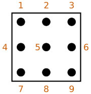

<html xmlns:v="urn:schemas-microsoft-com:vml"
xmlns:o="urn:schemas-microsoft-com:office:office"
xmlns:w="urn:schemas-microsoft-com:office:word"
xmlns:st1="urn:schemas-microsoft-com:office:smarttags"
xmlns="http://www.w3.org/TR/REC-html40">

<head>
<meta http-equiv=Content-Type content="text/html; charset=windows-1252">
<meta name=ProgId content=Word.Document>
<meta name=Generator content="Microsoft Word 11">
<meta name=Originator content="Microsoft Word 11">
<link rel=File-List href="wikipedia_files/filelist.xml">
<link rel=Edit-Time-Data href="wikipedia_files/editdata.mso">
<!--[if !mso]>
<style>
v\:* {behavior:url(#default#VML);}
o\:* {behavior:url(#default#VML);}
w\:* {behavior:url(#default#VML);}
.shape {behavior:url(#default#VML);}
</style>
<![endif]-->
<title>Sudoku</title>
<o:SmartTagType namespaceuri="urn:schemas-microsoft-com:office:smarttags"
 name="State"/>
<o:SmartTagType namespaceuri="urn:schemas-microsoft-com:office:smarttags"
 name="Street"/>
<o:SmartTagType namespaceuri="urn:schemas-microsoft-com:office:smarttags"
 name="address"/>
<o:SmartTagType namespaceuri="urn:schemas-microsoft-com:office:smarttags"
 name="country-region"/>
<o:SmartTagType namespaceuri="urn:schemas-microsoft-com:office:smarttags"
 name="City"/>
<o:SmartTagType namespaceuri="urn:schemas-microsoft-com:office:smarttags"
 name="place"/>
<!--[if gte mso 9]><xml>
 <o:DocumentProperties>
  <o:Author>Sam Scott</o:Author>
  <o:LastAuthor>Sam Scott</o:LastAuthor>
  <o:Revision>6</o:Revision>
  <o:TotalTime>76</o:TotalTime>
  <o:Created>2007-12-21T22:23:00Z</o:Created>
  <o:LastSaved>2007-12-21T23:45:00Z</o:LastSaved>
  <o:Pages>1</o:Pages>
  <o:Words>7245</o:Words>
  <o:Characters>41302</o:Characters>
  <o:Company>Ursula Franklin Academy</o:Company>
  <o:Lines>344</o:Lines>
  <o:Paragraphs>96</o:Paragraphs>
  <o:CharactersWithSpaces>48451</o:CharactersWithSpaces>
  <o:Version>11.5606</o:Version>
 </o:DocumentProperties>
</xml><![endif]--><!--[if gte mso 9]><xml>
 <w:WordDocument>
  <w:View>Print</w:View>
  <w:Zoom>BestFit</w:Zoom>
  <w:SpellingState>Clean</w:SpellingState>
  <w:GrammarState>Clean</w:GrammarState>
  <w:PunctuationKerning/>
  <w:ValidateAgainstSchemas/>
  <w:SaveIfXMLInvalid>false</w:SaveIfXMLInvalid>
  <w:IgnoreMixedContent>false</w:IgnoreMixedContent>
  <w:AlwaysShowPlaceholderText>false</w:AlwaysShowPlaceholderText>
  <w:Compatibility>
   <w:BreakWrappedTables/>
   <w:SnapToGridInCell/>
   <w:WrapTextWithPunct/>
   <w:UseAsianBreakRules/>
   <w:DontGrowAutofit/>
  </w:Compatibility>
  <w:BrowserLevel>MicrosoftInternetExplorer4</w:BrowserLevel>
 </w:WordDocument>
</xml><![endif]--><!--[if gte mso 9]><xml>
 <w:LatentStyles DefLockedState="false" LatentStyleCount="156">
 </w:LatentStyles>
</xml><![endif]--><!--[if !mso]><object
 classid="clsid:38481807-CA0E-42D2-BF39-B33AF135CC4D" id=ieooui></object>
<style>
st1\:*{behavior:url(#ieooui) }
</style>
<![endif]-->
<style>
<!--
 /* Font Definitions */
 @font-face
	{font-family:"MS Mincho";
	panose-1:2 2 6 9 4 2 5 8 3 4;
	mso-font-alt:"\FF2D\FF33 \660E\671D";
	mso-font-charset:128;
	mso-generic-font-family:modern;
	mso-font-pitch:fixed;
	mso-font-signature:-536870145 1791491579 18 0 131231 0;}
@font-face
	{font-family:"MS Gothic";
	panose-1:2 11 6 9 7 2 5 8 2 4;
	mso-font-alt:"\FF2D\FF33 \30B4\30B7\30C3\30AF";
	mso-font-charset:128;
	mso-generic-font-family:modern;
	mso-font-pitch:fixed;
	mso-font-signature:-536870145 1791491579 18 0 131231 0;}
@font-face
	{font-family:"\@MS Gothic";
	panose-1:2 11 6 9 7 2 5 8 2 4;
	mso-font-charset:128;
	mso-generic-font-family:modern;
	mso-font-pitch:fixed;
	mso-font-signature:-536870145 1791491579 18 0 131231 0;}
@font-face
	{font-family:"\@MS Mincho";
	panose-1:2 2 6 9 4 2 5 8 3 4;
	mso-font-charset:128;
	mso-generic-font-family:modern;
	mso-font-pitch:fixed;
	mso-font-signature:-536870145 1791491579 18 0 131231 0;}
 /* Style Definitions */
 p.MsoNormal, li.MsoNormal, div.MsoNormal
	{mso-style-parent:"";
	margin:0cm;
	margin-bottom:.0001pt;
	mso-pagination:widow-orphan;
	font-size:12.0pt;
	font-family:"Times New Roman";
	mso-fareast-font-family:"Times New Roman";}
h1
	{mso-margin-top-alt:auto;
	margin-right:0cm;
	mso-margin-bottom-alt:auto;
	margin-left:0cm;
	mso-pagination:widow-orphan;
	mso-outline-level:1;
	font-size:24.0pt;
	font-family:"Times New Roman";
	font-weight:bold;}
h2
	{mso-margin-top-alt:auto;
	margin-right:0cm;
	mso-margin-bottom-alt:auto;
	margin-left:0cm;
	mso-pagination:widow-orphan;
	mso-outline-level:2;
	font-size:18.0pt;
	font-family:"Times New Roman";
	font-weight:bold;}
h3
	{mso-margin-top-alt:auto;
	margin-right:0cm;
	mso-margin-bottom-alt:auto;
	margin-left:0cm;
	mso-pagination:widow-orphan;
	mso-outline-level:3;
	font-size:13.5pt;
	font-family:"Times New Roman";
	font-weight:bold;}
h4
	{mso-margin-top-alt:auto;
	margin-right:0cm;
	mso-margin-bottom-alt:auto;
	margin-left:0cm;
	mso-pagination:widow-orphan;
	mso-outline-level:4;
	font-size:12.0pt;
	font-family:"Times New Roman";
	font-weight:bold;}
a:link, span.MsoHyperlink
	{color:blue;
	text-decoration:underline;
	text-underline:single;}
a:visited, span.MsoHyperlinkFollowed
	{color:blue;
	text-decoration:underline;
	text-underline:single;}
p
	{mso-margin-top-alt:auto;
	margin-right:0cm;
	mso-margin-bottom-alt:auto;
	margin-left:0cm;
	mso-pagination:widow-orphan;
	font-size:12.0pt;
	font-family:"Times New Roman";
	mso-fareast-font-family:"Times New Roman";}
span.tnihongokanji
	{mso-style-name:t_nihongo_kanji;}
span.tnihongocomma
	{mso-style-name:t_nihongo_comma;}
span.tnihongoromaji
	{mso-style-name:t_nihongo_romaji;}
span.tnihongohelp
	{mso-style-name:t_nihongo_help;}
span.tnihongoicon
	{mso-style-name:t_nihongo_icon;}
span.unicodeaudiolink
	{mso-style-name:"unicode audiolink";}
span.metadataaudiolinkinfo
	{mso-style-name:"metadata audiolinkinfo";}
span.toctoggle
	{mso-style-name:toctoggle;}
span.tocnumber
	{mso-style-name:tocnumber;}
span.toctext
	{mso-style-name:toctext;}
span.editsection
	{mso-style-name:editsection;}
span.mw-headline
	{mso-style-name:mw-headline;}
span.ipa
	{mso-style-name:ipa;}
span.tnihongonorom
	{mso-style-name:t_nihongo_norom;}
span.z3988
	{mso-style-name:z3988;}
span.SpellE
	{mso-style-name:"";
	mso-spl-e:yes;}
span.GramE
	{mso-style-name:"";
	mso-gram-e:yes;}
@page Section1
	{size:612.0pt 792.0pt;
	margin:72.0pt 90.0pt 72.0pt 90.0pt;
	mso-header-margin:35.4pt;
	mso-footer-margin:35.4pt;
	mso-paper-source:0;}
div.Section1
	{page:Section1;}
@page Section2
	{size:612.0pt 792.0pt;
	margin:72.0pt 90.0pt 72.0pt 90.0pt;
	mso-header-margin:35.4pt;
	mso-footer-margin:35.4pt;
	mso-paper-source:0;}
div.Section2
	{page:Section2;}
@page Section3
	{size:612.0pt 792.0pt;
	margin:72.0pt 90.0pt 72.0pt 90.0pt;
	mso-header-margin:35.4pt;
	mso-footer-margin:35.4pt;
	mso-paper-source:0;}
div.Section3
	{page:Section3;}
@page Section4
	{size:612.0pt 792.0pt;
	margin:72.0pt 90.0pt 72.0pt 90.0pt;
	mso-header-margin:35.4pt;
	mso-footer-margin:35.4pt;
	mso-paper-source:0;}
div.Section4
	{page:Section4;}
@page Section5
	{size:612.0pt 792.0pt;
	margin:72.0pt 90.0pt 72.0pt 90.0pt;
	mso-header-margin:35.4pt;
	mso-footer-margin:35.4pt;
	mso-paper-source:0;}
div.Section5
	{page:Section5;}
@page Section6
	{size:612.0pt 792.0pt;
	margin:72.0pt 90.0pt 72.0pt 90.0pt;
	mso-header-margin:35.4pt;
	mso-footer-margin:35.4pt;
	mso-paper-source:0;}
div.Section6
	{page:Section6;}
@page Section7
	{size:612.0pt 792.0pt;
	margin:72.0pt 90.0pt 72.0pt 90.0pt;
	mso-header-margin:35.4pt;
	mso-footer-margin:35.4pt;
	mso-paper-source:0;}
div.Section7
	{page:Section7;}
@page Section8
	{size:612.0pt 792.0pt;
	margin:72.0pt 90.0pt 72.0pt 90.0pt;
	mso-header-margin:35.4pt;
	mso-footer-margin:35.4pt;
	mso-paper-source:0;}
div.Section8
	{page:Section8;}
@page Section9
	{size:612.0pt 792.0pt;
	margin:72.0pt 90.0pt 72.0pt 90.0pt;
	mso-header-margin:35.4pt;
	mso-footer-margin:35.4pt;
	mso-paper-source:0;}
div.Section9
	{page:Section9;}
@page Section10
	{size:612.0pt 792.0pt;
	margin:72.0pt 90.0pt 72.0pt 90.0pt;
	mso-header-margin:35.4pt;
	mso-footer-margin:35.4pt;
	mso-paper-source:0;}
div.Section10
	{page:Section10;}
@page Section11
	{size:612.0pt 792.0pt;
	margin:72.0pt 90.0pt 72.0pt 90.0pt;
	mso-header-margin:35.4pt;
	mso-footer-margin:35.4pt;
	mso-paper-source:0;}
div.Section11
	{page:Section11;}
@page Section12
	{size:612.0pt 792.0pt;
	margin:72.0pt 90.0pt 72.0pt 90.0pt;
	mso-header-margin:35.4pt;
	mso-footer-margin:35.4pt;
	mso-paper-source:0;}
div.Section12
	{page:Section12;}
@page Section13
	{size:612.0pt 792.0pt;
	margin:72.0pt 90.0pt 72.0pt 90.0pt;
	mso-header-margin:35.4pt;
	mso-footer-margin:35.4pt;
	mso-paper-source:0;}
div.Section13
	{page:Section13;}
@page Section14
	{size:612.0pt 792.0pt;
	margin:72.0pt 90.0pt 72.0pt 90.0pt;
	mso-header-margin:35.4pt;
	mso-footer-margin:35.4pt;
	mso-paper-source:0;}
div.Section14
	{page:Section14;}
@page Section15
	{size:612.0pt 792.0pt;
	margin:72.0pt 90.0pt 72.0pt 90.0pt;
	mso-header-margin:35.4pt;
	mso-footer-margin:35.4pt;
	mso-paper-source:0;}
div.Section15
	{page:Section15;}
 /* List Definitions */
 @list l0
	{mso-list-id:268389683;
	mso-list-template-ids:-829120786;}
@list l0:level1
	{mso-level-tab-stop:36.0pt;
	mso-level-number-position:left;
	text-indent:-18.0pt;}
@list l0:level2
	{mso-level-tab-stop:72.0pt;
	mso-level-number-position:left;
	text-indent:-18.0pt;}
@list l0:level3
	{mso-level-tab-stop:108.0pt;
	mso-level-number-position:left;
	text-indent:-18.0pt;}
@list l0:level4
	{mso-level-tab-stop:144.0pt;
	mso-level-number-position:left;
	text-indent:-18.0pt;}
@list l0:level5
	{mso-level-tab-stop:180.0pt;
	mso-level-number-position:left;
	text-indent:-18.0pt;}
@list l0:level6
	{mso-level-tab-stop:216.0pt;
	mso-level-number-position:left;
	text-indent:-18.0pt;}
@list l0:level7
	{mso-level-tab-stop:252.0pt;
	mso-level-number-position:left;
	text-indent:-18.0pt;}
@list l0:level8
	{mso-level-tab-stop:288.0pt;
	mso-level-number-position:left;
	text-indent:-18.0pt;}
@list l0:level9
	{mso-level-tab-stop:324.0pt;
	mso-level-number-position:left;
	text-indent:-18.0pt;}
@list l1
	{mso-list-id:346293416;
	mso-list-template-ids:-1466404092;}
@list l1:level1
	{mso-level-tab-stop:36.0pt;
	mso-level-number-position:left;
	text-indent:-18.0pt;}
@list l1:level2
	{mso-level-tab-stop:72.0pt;
	mso-level-number-position:left;
	text-indent:-18.0pt;}
@list l1:level3
	{mso-level-tab-stop:108.0pt;
	mso-level-number-position:left;
	text-indent:-18.0pt;}
@list l1:level4
	{mso-level-tab-stop:144.0pt;
	mso-level-number-position:left;
	text-indent:-18.0pt;}
@list l1:level5
	{mso-level-tab-stop:180.0pt;
	mso-level-number-position:left;
	text-indent:-18.0pt;}
@list l1:level6
	{mso-level-tab-stop:216.0pt;
	mso-level-number-position:left;
	text-indent:-18.0pt;}
@list l1:level7
	{mso-level-tab-stop:252.0pt;
	mso-level-number-position:left;
	text-indent:-18.0pt;}
@list l1:level8
	{mso-level-tab-stop:288.0pt;
	mso-level-number-position:left;
	text-indent:-18.0pt;}
@list l1:level9
	{mso-level-tab-stop:324.0pt;
	mso-level-number-position:left;
	text-indent:-18.0pt;}
@list l2
	{mso-list-id:1317957293;
	mso-list-template-ids:1557144788;}
@list l2:level1
	{mso-level-number-format:bullet;
	mso-level-text:\F0B7;
	mso-level-tab-stop:36.0pt;
	mso-level-number-position:left;
	text-indent:-18.0pt;
	mso-ansi-font-size:10.0pt;
	font-family:Symbol;}
@list l2:level2
	{mso-level-tab-stop:72.0pt;
	mso-level-number-position:left;
	text-indent:-18.0pt;}
@list l2:level3
	{mso-level-tab-stop:108.0pt;
	mso-level-number-position:left;
	text-indent:-18.0pt;}
@list l2:level4
	{mso-level-tab-stop:144.0pt;
	mso-level-number-position:left;
	text-indent:-18.0pt;}
@list l2:level5
	{mso-level-tab-stop:180.0pt;
	mso-level-number-position:left;
	text-indent:-18.0pt;}
@list l2:level6
	{mso-level-tab-stop:216.0pt;
	mso-level-number-position:left;
	text-indent:-18.0pt;}
@list l2:level7
	{mso-level-tab-stop:252.0pt;
	mso-level-number-position:left;
	text-indent:-18.0pt;}
@list l2:level8
	{mso-level-tab-stop:288.0pt;
	mso-level-number-position:left;
	text-indent:-18.0pt;}
@list l2:level9
	{mso-level-tab-stop:324.0pt;
	mso-level-number-position:left;
	text-indent:-18.0pt;}
@list l3
	{mso-list-id:1708945614;
	mso-list-template-ids:-1268598716;}
@list l3:level1
	{mso-level-number-format:bullet;
	mso-level-text:\F0B7;
	mso-level-tab-stop:36.0pt;
	mso-level-number-position:left;
	text-indent:-18.0pt;
	mso-ansi-font-size:10.0pt;
	font-family:Symbol;}
@list l3:level2
	{mso-level-tab-stop:72.0pt;
	mso-level-number-position:left;
	text-indent:-18.0pt;}
@list l3:level3
	{mso-level-tab-stop:108.0pt;
	mso-level-number-position:left;
	text-indent:-18.0pt;}
@list l3:level4
	{mso-level-tab-stop:144.0pt;
	mso-level-number-position:left;
	text-indent:-18.0pt;}
@list l3:level5
	{mso-level-tab-stop:180.0pt;
	mso-level-number-position:left;
	text-indent:-18.0pt;}
@list l3:level6
	{mso-level-tab-stop:216.0pt;
	mso-level-number-position:left;
	text-indent:-18.0pt;}
@list l3:level7
	{mso-level-tab-stop:252.0pt;
	mso-level-number-position:left;
	text-indent:-18.0pt;}
@list l3:level8
	{mso-level-tab-stop:288.0pt;
	mso-level-number-position:left;
	text-indent:-18.0pt;}
@list l3:level9
	{mso-level-tab-stop:324.0pt;
	mso-level-number-position:left;
	text-indent:-18.0pt;}
ol
	{margin-bottom:0cm;}
ul
	{margin-bottom:0cm;}
-->
</style>
<!--[if gte mso 10]>
<style>
 /* Style Definitions */
 table.MsoNormalTable
	{mso-style-name:"Table Normal";
	mso-tstyle-rowband-size:0;
	mso-tstyle-colband-size:0;
	mso-style-noshow:yes;
	mso-style-parent:"";
	mso-padding-alt:0cm 5.4pt 0cm 5.4pt;
	mso-para-margin:0cm;
	mso-para-margin-bottom:.0001pt;
	mso-pagination:widow-orphan;
	font-size:10.0pt;
	font-family:"Times New Roman";
	mso-ansi-language:#0400;
	mso-fareast-language:#0400;
	mso-bidi-language:#0400;}
</style>
<![endif]--><!--[if gte mso 9]><xml>
 <o:shapedefaults v:ext="edit" spidmax="5122"/>
</xml><![endif]--><!--[if gte mso 9]><xml>
 <o:shapelayout v:ext="edit">
  <o:idmap v:ext="edit" data="1"/>
 </o:shapelayout></xml><![endif]-->
</head>

<body lang=EN-CA link=blue vlink=blue style='tab-interval:36.0pt'>
<div class=Section1> 
  <h1><span class=SpellE><span style='font-family:Arial'>Sudoku</span></span><span
style='font-family:Arial'><o:p></o:p></span></h1>
</div>
<blockquote> 
  <p><font face="Arial, Helvetica, sans-serif"><em>Adapted from <span class=SpellE>Wikipedia</span>, 
    the free <span class=SpellE>encyclopedia,</span> December 21, 2007.<o:p></o:p> 
    </em> </font> 
  <div align="left" class=MsoNormal></div>
</blockquote>
<div class=Section1> 
  <p class=MsoNormal><span class=SpellE><b><i><span style='font-family:Arial'>Sudoku</span></i></b></span><span
style='font-family:Arial'> is a <a href="http://en.wikipedia.org/wiki/Logic"
title=Logic>logic</a>-based number placement <a
href="http://en.wikipedia.org/wiki/Puzzle" title=Puzzle>puzzle</a>. The objective 
    is to fill a 9×9 grid so that each column, each row, and each of the nine 
    3×3 boxes (also called blocks or regions) contains the digits from 1 to 9, 
    only <i>one</i> time each (that is, exclusively). The puzzle setter provides 
    a partially completed grid.<o:p></o:p></span></p>
  <p><span style='font-family:Arial'>Completed <span class=SpellE><i>Sudoku</i></span> 
    puzzles are a type of <a href="http://en.wikipedia.org/wiki/Latin_square"
title="Latin square">Latin square</a>, with an additional constraint on the contents 
    of individual regions. <a
href="http://en.wikipedia.org/wiki/Leonhard_Euler" title="Leonhard Euler"><span
class=SpellE>Leonhard</span> Euler</a> is sometimes incorrectly cited as the source 
    of the puzzle, based on his work with Latin squares.<sup id="_ref-0"><a
href="http://en.wikipedia.org/wiki/Sudoku#_note-0" title="">[1]</a></sup><o:p></o:p></span></p>
  <p><span style='font-family:Arial'>The modern puzzle was invented by an American 
    architect, <a href="http://en.wikipedia.org/wiki/Howard_Garns"
title="Howard Garns">Howard <span class=SpellE>Garns</span></a>, in <a
href="http://en.wikipedia.org/wiki/1979" title=1979>1979</a> and published by 
    <a
href="http://en.wikipedia.org/wiki/Dell_Magazines" title="Dell Magazines">Dell 
    Magazines</a> under the name &quot;<b><i>Number Place</i></b>&quot;.<sup
id="_ref-1"><a href="http://en.wikipedia.org/wiki/Sudoku#_note-1" title="">[2]</a></sup> 
    It became popular in <a href="http://en.wikipedia.org/wiki/Japan" title=Japan>Japan</a> 
    in <a href="http://en.wikipedia.org/wiki/1986" title=1986>1986</a>, after 
    it was published by <a href="http://en.wikipedia.org/wiki/Nikoli" title=Nikoli><span
class=SpellE>Nikoli</span></a> and given the name <span class=SpellE>Sudoku</span>, 
    meaning <i>single number</i>. <sup id="_ref-2"><a
href="http://en.wikipedia.org/wiki/Sudoku#_note-2" title="">[3]</a></sup> It became 
    an international hit in <a href="http://en.wikipedia.org/wiki/2005"
title=2005>2005</a>.<o:p></o:p></span></p>
  <blockquote> 
    <div align="left" class=MsoNormal><span style='font-family:Arial'><span style='text-decoration:none;text-underline:
none'> </span><o:p><br>
      </o:p></span><span class=GramE><i style='mso-bidi-font-style:normal'>A <span
class=SpellE>Sudoku</span> puzzle.</i></span></div>
  </blockquote>
  <div class=Section1> 
    <p class=MsoNormal><span style='font-family:Arial'><o:p></o:p><o:p></o:p></span></p>
  </div>
  <blockquote> 
    <div align="left" class=MsoNormal><i style='mso-bidi-font-style:normal'><span style='text-decoration:
none;text-underline:none'> </span><o:p><br>
      </o:p></i><span class=GramE><i style='mso-bidi-font-style:normal'>The solution 
      to the <span class=SpellE>Sudoku</span> puzzle above.</i></span></div>
  </blockquote>
  <h2><span style='font-family:Arial'>1. <span class=mw-headline>Introduction</span><o:p></o:p></span></h2>
  <p><span style='font-family:Arial'>The name <span class=SpellE><span
class=GramE><i>Sudoku</i></span></span><span class=GramE><i>(</i></span></span><i><span
style='font-family:"MS Mincho";mso-ascii-font-family:Arial;mso-bidi-font-family:
Arial'>&#25968;&#29420;</span><span style='font-family:Arial'>)</span></i><span
style='font-family:Arial'> is short for &quot;</span><span class=SpellE><span
style='font-family:"MS Mincho";mso-ascii-font-family:Arial;mso-bidi-font-family:
Arial'>&#25968;&#23383;&#12399;&#29420;&#36523;&#12395;&#38480;&#12427;</span></span><span
style='font-family:Arial'>&quot; which is read, &quot;<span class=SpellE>S&#363;ji</span> 
    <span class=SpellE>wa</span> <span class=SpellE>dokushin</span> <span
class=SpellE>ni</span> <span class=SpellE>kagiru</span>&quot;, meaning &quot;the 
    numbers must be single&quot;, or &quot;the numbers must occur only once&quot;. 
    <sup id="_ref-3"><a
href="http://en.wikipedia.org/wiki/Sudoku#_note-3" title="">[4<span
class=GramE>]</span></a><a href="http://en.wikipedia.org/wiki/Sudoku#_note-4"
title="">[5]</a><a href="http://en.wikipedia.org/wiki/Sudoku#_note-5" title="">[6]</a><a
href="http://en.wikipedia.org/wiki/Sudoku#_note-6" title="">[7]</a><a
href="http://en.wikipedia.org/wiki/Sudoku#_note-7" title="">[8]</a><a
href="http://en.wikipedia.org/wiki/Sudoku#_note-8" title="">[9]</a></sup>. The 
    name is a <a href="http://en.wikipedia.org/wiki/Trademark" title=Trademark>trademark</a> 
    of puzzle publisher <a href="http://en.wikipedia.org/wiki/Nikoli" title=Nikoli><span
class=SpellE>Nikoli</span></a> Co. Ltd. in <a
href="http://en.wikipedia.org/wiki/Japan" title=Japan><span class=GramE>Japan</span></a><sup
id="_ref-trademark_0"><a
href="http://en.wikipedia.org/wiki/Sudoku#_note-trademark" title="">[10]</a></sup>. 
    In <a href="http://en.wikipedia.org/wiki/Japanese_language"
title="Japanese language">Japanese</a>, the word is pronounced <a
href="http://en.wikipedia.org/wiki/Help:IPA" title="Help:IPA">IPA</a>: <span
class=ipa><span title="Pronunciation in IPA">[<span class=SpellE>s&#623;&#720;dok&#623;</span>]</span></span>; 
    in <a href="http://en.wikipedia.org/wiki/English_language"
title="English language">English</a>, it is usually <a
href="http://en.wikipedia.org/wiki/Help:Pronunciation"
title="Help:Pronunciation">IPA</a>: <span class=ipa><span
title="Pronunciation in IPA">/<span class=SpellE>s&#601;&#712;do&#650;ku</span>&#720;/</span></span>. 
    Other Japanese publishers refer to the puzzle as <st1:Street w:st="on"><st1:address
 w:st="on"><i>Number Place</i></st1:address></st1:Street>, the original <st1:country-region
w:st="on"><st1:place w:st="on">U.S.</st1:place></st1:country-region> title, or 
    as &quot;<span class=SpellE>Nanpure</span>&quot;(</span><span style='font-family:
"MS Mincho";mso-ascii-font-family:Arial;mso-bidi-font-family:Arial'>&#12490;&#12531;&#12503;&#12524;</span><span
style='font-family:Arial'>) for short.<sup id="_ref-Garns_0"><a
href="http://en.wikipedia.org/wiki/Sudoku#_note-Garns" title="">[11]</a></sup> 
    Some publishers spell the title as &quot;Su <span class=SpellE>Doku</span>&quot;. 
    The numerals in <span class=SpellE><i>Sudoku</i></span> puzzles are used for 
    convenience; arithmetic relationships between numerals are irrelevant. Any 
    set of distinct symbols will do; <span class=GramE>letters,</span> shapes, 
    or colours may be used without altering the rules. In fact, <a
href="http://en.wikipedia.org/wiki/ESPN" title=ESPN>ESPN</a> published <span
class=SpellE>Sudoku</span> puzzles substituting the positions on a baseball field 
    for the numbers 1 through 9; and <a
href="http://en.wikipedia.org/wiki/Viz" title=Viz><span class=SpellE>Viz</span></a> 
    magazine published a <a href="http://en.wikipedia.org/wiki/Doctor_Who"
title="Doctor Who">Doctor Who</a> version of the game, using images of the television 
    series' first nine leading actors in place of the numerals. <a
href="http://en.wikipedia.org/wiki/Dell_Magazines" title="Dell Magazines">Dell 
    Magazines</a>, the puzzle's originator, has been using numerals for <st1:Street
w:st="on"><st1:address w:st="on"><i>Number Place</i></st1:address></st1:Street> 
    in its magazines since they first published it in 1979.<sup id="_ref-Garns_1"><a
href="http://en.wikipedia.org/wiki/Sudoku#_note-Garns" title="">[11]</a></sup><o:p></o:p></span></p>
  <h2><span class=editsection><span
style='font-family:Arial'>2.</span></span><span style='font-family:Arial'> <span
class=mw-headline>Strategies</span><o:p></o:p></span></h2>
  <p><span style='font-family:Arial'>The strategy for solving a puzzle may be 
    regarded as comprising a combination of three processes: scanning, marking 
    up, and analyzing. The approach to analysis may vary according to the concepts 
    and the representations on which it is based.<o:p></o:p></span></p>
  <h3><span class=editsection><span style='font-family:Arial'>2.1</span></span><span
style='font-family:Arial'> <span class=mw-headline>Doubles and triples</span><o:p></o:p></span></h3>
  <p><span style='font-family:Arial'>Finding pairs or doubles can be helpful in 
    finding a solution. If a pair is found in a row where those 2 squares aren't 
    the only open squares, those numbers can be cancelled out of that row. The 
    same goes for triples.<o:p></o:p></span></p>
  <h3><span class=editsection><span
style='font-family:Arial'>2.2</span></span><span style='font-family:Arial'> <span
class=mw-headline>Scanning</span><o:p></o:p></span></h3>
  <p><span style='font-family:Arial'>Scanning is performed at the outset and throughout 
    the solution. Scans need be performed only once between analyses. Scanning 
    consists of two techniques:<o:p></o:p></span></p>
  <ul type=disc>
    <li class=MsoNormal style='mso-margin-top-alt:auto;mso-margin-bottom-alt:auto;
     mso-list:l2 level1 lfo1;tab-stops:list 36.0pt'><b><span style='font-family:
     Arial'>Cross-hatching:</span></b><span style='font-family:Arial'> The scanning 
      of rows to identify which line in a region may contain a certain numeral 
      by a process of elimination. The process is repeated with the columns. It 
      is important to perform this process systematically, checking all of the 
      digits 1–9.<o:p></o:p></span></li>
    <li class=MsoNormal style='mso-margin-top-alt:auto;mso-margin-bottom-alt:auto;
     mso-list:l2 level1 lfo1;tab-stops:list 36.0pt'><b><span style='font-family:
     Arial'>Counting 1–9 in regions, rows, and columns to identify missing numerals.</span></b><span style='font-family:Arial'> 
      Counting based upon the last numeral discovered may speed up the search. 
      It also can be the case, particularly in tougher puzzles, that the best 
      way to ascertain the value of a cell is to count in reverse—that is, by 
      scanning the cell's region, row, and column for values it <i>cannot</i> 
      be, in order to see what remains.<o:p></o:p></span></li>
  </ul>
  <p>&nbsp;</p>
</div>
<blockquote> 
  <div class=Section1><span style='font-family:Arial'><span
style='text-decoration:none;text-underline:none'></span></span></div>
  <div class=Section1><font face="Times New Roman, Times, serif"><span style='font-family:Arial'><o:p></o:p></span><i style='mso-bidi-font-style:normal'>The 
    top right region in this puzzle must contain a 5. By hatching across and up 
    from 5s elsewhere, the solver can eliminate all the empty cells in the region 
    which cannot contain a 5. This leaves only one possibility (shaded green).</i></font><span style='font-family:Arial'><o:p></o:p></span></div>
</blockquote>
<blockquote> 
  <blockquote> <o:p class=Section1></o:p> </blockquote>
</blockquote>
<div class=Section2> 
  <p><span style='font-family:Arial'>Advanced solvers look for &quot;contingencies&quot; 
    while scanning, narrowing a numeral's location within a row, column, or region 
    to two or three cells. When those cells lie within the same row <i>and</i> 
    region, they can be used for elimination during cross-hatching and counting. 
    Puzzles solved by scanning alone without requiring the detection of contingencies 
    are classified as &quot;easy&quot;; more difficult puzzles are not readily 
    solved by basic scanning alone.<o:p></o:p></span></p>
  <p><span style='font-family:Arial'>Logically, every <span class=SpellE>sudoku</span> 
    puzzle, regardless of difficulty, is solved via scanning heuristics. In a 
    true <span
class=SpellE>sudoku</span> puzzle, every number has a necessary position in each 
    part of the grid which can be deduced from the description or if you prefer 
    definition of what a &quot;true&quot; <span class=SpellE>sudoku</span> is. 
    The only difference between solving advanced puzzles and simpler puzzles is 
    not the techniques used to solve the puzzle but recognizing the logical implications 
    of the scanning heuristic. One such implication would be recognizing logical 
    &quot;contingencies&quot; which just basically means narrowing down the possibilities 
    of a given square via the relations between every other square.<o:p></o:p></span></p>
  <h3><span class=editsection><span style='font-family:Arial'>2.3</span></span><span
style='font-family:Arial'> <span class=mw-headline>Marking up</span><o:p></o:p></span></h3>
  <p><span style='font-family:Arial'>Scanning stops when no further numerals can 
    be discovered, making it necessary to engage in logical analysis. One method 
    to guide the analysis is to mark candidate numerals in the blank cells.<o:p></o:p></span></p>
  <h4><span
class=editsection><span style='font-family:Arial'>2.3.1 </span></span><span
class=mw-headline><span style='font-family:Arial'>Subscript notation</span></span><span
style='font-family:Arial'><o:p></o:p></span></h4>
  <p><span style='font-family:Arial'>In subscript notation, the candidate numerals 
    are written in subscript in the cells. Because puzzles printed in a newspaper 
    are too small to accommodate more than a few subscript digits of normal handwriting, 
    solvers may create a larger copy of the puzzle. Using two colours, or mixing 
    pencil and pen marks can be helpful.<o:p></o:p></span></p>
  <h4><span class=editsection><span
style='font-family:Arial'>2.3.2</span></span><span style='font-family:Arial'> 
    <span
class=mw-headline>Dot notation</span><o:p></o:p></span></h4>
  <p><span style='font-family:Arial'>The dot notation uses a pattern of dots in 
    each square, where the dot position indicates a number from 1 to 9. The dot 
    notation can be used on the original puzzle. Dexterity is required in placing 
    the dots, since misplaced dots or inadvertent marks inevitably lead to confusion 
    and may not be easily erased.<o:p></o:p></span></p>
  <p><span style='font-family:Arial'>An alternative technique is to mark the numerals 
    that a cell <i>cannot</i> be. The cell starts empty and as more constraints 
    become known, it slowly fills until only one mark is missing. Assuming no 
    mistakes are made and the marks can be overwritten with the value of a cell, 
    there is no longer a need for any erasures.</span><span style='font-size:12.0pt;font-family:Arial;mso-fareast-font-family:"Times New Roman";
mso-ansi-language:EN-CA;mso-fareast-language:EN-CA;mso-bidi-language:AR-SA'><br
clear=all style='page-break-before:auto;mso-break-type:section-break'>
    </span> </p>
</div>
<blockquote> 
  <div align="left" class=MsoNormal><span style='font-size:10.0pt;font-family:Arial'><span
style='text-decoration:none;text-underline:none'> </span><o:p></o:p></span></div>
  <font face="Times New Roman, Times, serif"><o:p align="left" class=MsoNormal><span style='font-size:10.0pt;font-family:Arial'><o:p> 
  </o:p></span><i style='mso-bidi-font-style:normal'>Here is a method for marking 
  likely numerals in a single cell by the placing of pencil dots. To reduce the 
  number of dots used in each cell, the marking would only be done after as many 
  numbers as possible have been added to the puzzle by scanning. Dots are erased 
  as their corresponding numerals are eliminated as candidates.</i></o:p> </font></blockquote>
<div class=Section3> 
  <p class=MsoNormal><i style='mso-bidi-font-style:normal'><o:p></o:p></i><span style='font-family:Arial'><o:p></o:p></span> 
  </p>
</div>
<blockquote> 
  <div class=Section4> 
    <p><font face="Times New Roman, Times, serif"><br>
      <span style='font-size:10.0pt;font-family:Arial'><o:p></o:p></span><i style='mso-bidi-font-style:normal'>This 
      partially filled sub-square determines that 3, 5, and 6 must go in the top 
      row. These create a contingency for the far right hatched cell based on 
      the complete row across. It must be a 4<span class=editsection><o:p></o:p></span></i></font></p>
  </div>
</blockquote>
<span class=editsection><i style='mso-bidi-font-style:normal'><span
style='font-size:10.0pt;font-family:"Times New Roman";mso-fareast-font-family:
"Times New Roman";mso-ansi-language:EN-CA;mso-fareast-language:EN-CA;
mso-bidi-language:AR-SA'><br clear=all style='page-break-before:auto;
mso-break-type:section-break'>
</span></i></span> 
<div class=Section6> 
  <h3><span class=editsection><span
style='font-family:Arial'>3. </span></span><span class=mw-headline><span
style='font-family:Arial'>Analysis</span></span></h3>
  <p><span style='font-family:Arial'>The two main approaches to analysis are &quot;candidate 
    elimination&quot;<sup id="_ref-candidate_elimination_0"><a
href="http://en.wikipedia.org/wiki/Sudoku#_note-candidate_elimination" title="">[12]</a></sup> 
    and &quot;what-if&quot;.<sup id="_ref-what_if_0"><a
href="http://en.wikipedia.org/wiki/Sudoku#_note-what_if" title="">[13]</a></sup> 
    In &quot;candidate elimination&quot;, progress is made by successively eliminating 
    candidate numerals from cells to leave one choice. After each answer has been 
    achieved, another scan may be performed—usually checking to see the effect 
    of the contingencies. In general, if entering a particular numeral prevents 
    completion of the other necessary placements, then the numeral in question 
    can be eliminated as a candidate. One method works by identifying &quot;matched 
    cell groups&quot;. For instance, if precisely two cells within a scope (a 
    particular row, column, or region) contain the same two candidate numerals 
    (<span class=SpellE><i>p</i><span class=GramE>,<i>q</i></span></span>), or 
    if precisely three cells within a scope contain the same three candidate numerals 
    (<span class=SpellE><i>p</i>,<i>q</i>,<i>r</i></span>), these cells are said 
    to be matched. The placement of those candidate numerals anywhere else within 
    that same scope would make a solution impossible; therefore, those candidate 
    numerals can be deleted from all other cells in the scope.<o:p></o:p></span></p>
  <p><span style='font-family:Arial'>In the &quot;what-if&quot; approach (also 
    called &quot;guess-and-check&quot;, &quot;bifurcation&quot;, &quot;<a
href="http://en.wikipedia.org/wiki/Backtracking" title=Backtracking>backtracking</a>&quot; 
    and &quot;<a href="http://en.wikipedia.org/wiki/Ariadne%27s_thread_%28logic%29"
title="Ariadne's thread (logic)"><span class=SpellE>Ariadne's</span> thread</a>&quot;), 
    a cell with two candidate numerals is selected, and a guess is made. The steps 
    are repeated until <span class=GramE>a duplication</span> is found or a cell 
    is left without a possible candidate, in which case the alternative candidate 
    must be the solution. For each cell's candidate, the question is posed: 'will 
    entering a particular numeral prevent completion of the other placements of 
    that numeral?' If the answer is 'yes', then that candidate can be eliminated. 
    If the &quot;what-if&quot; exercises for both candidates show that either 
    one is possible, another pair should be tried. Alternatively, if the &quot;what-if&quot; 
    exercises for both candidates imply an identical result, then that result 
    must be true. The what-if approach requires a pencil and eraser or a good 
    layout memory.<o:p></o:p></span></p>
  <p><span style='font-family:Arial'>There are three <span class=GramE>kind</span> 
    of conflicts, which can appear during puzzle solving:<o:p></o:p></span></p>
  <ol start=1 type=1>
    <li class=MsoNormal style='mso-margin-top-alt:auto;mso-margin-bottom-alt:auto;
     mso-list:l0 level1 lfo2;tab-stops:list 36.0pt'><span style='font-family:
     Arial'>basic conflicts - there are only N-1 different candidates in N cell 
      in the area<o:p></o:p></span></li>
    <li class=MsoNormal style='mso-margin-top-alt:auto;mso-margin-bottom-alt:auto;
     mso-list:l0 level1 lfo2;tab-stops:list 36.0pt'><span class=GramE><span
     style='font-family:Arial'>fish</span></span><span style='font-family:Arial'> 
      conflicts - when eliminating number from N rows/columns, it will disappear 
      also from N+1 columns/rows.<o:p></o:p></span></li>
    <li class=MsoNormal style='mso-margin-top-alt:auto;mso-margin-bottom-alt:auto;
     mso-list:l0 level1 lfo2;tab-stops:list 36.0pt'><span class=GramE><span
     style='font-family:Arial'>unique</span></span><span style='font-family:
     Arial'> conflicts - this pattern means multiple solutions, all numbers in 
      the pattern exist exactly two times in every area, row and column. If there 
      is only one candidate in the cell, any virtual candidate can be added.<o:p></o:p></span></li>
  </ol>
  <p><span style='font-family:Arial'>Encountering any of those would indicate 
    that the puzzle is not uniquely solvable. Encountering any of them as a consequence 
    of &quot;what-if&quot; indicates that an untried alternative is correct.<o:p></o:p></span></p>
</div>
<span style='font-size:12.0pt;font-family:Arial;mso-fareast-font-family:"Times New Roman";
mso-ansi-language:EN-CA;mso-fareast-language:EN-CA;mso-bidi-language:AR-SA'><br
clear=all style='page-break-before:auto;mso-break-type:section-break'>
</span> 
<blockquote> 
  <div align="left" class=MsoNormal><span style='font-size:10.0pt;font-family:Arial'><span
style='text-decoration:none;text-underline:none'> </span></span><span
style='font-size:10.0pt'><o:p></o:p></span></div>
  <div class=MsoNormal><span
style='font-size:10.0pt'><o:p> </o:p></span><i style='mso-bidi-font-style:normal'>Here 
    is an analysis in <span class=SpellE>Sudoku</span>, done in superscript notation, 
    with all possible values for the squares written in. There are three squares 
    which contain only three values: 4, 6, and 8. If 4, 6, or 8 were written in 
    any square where they're red, it would be impossible to complete the squares 
    where they're blue. Therefore, the numbers in red can be erased. This logic 
    works with rows, columns, sections, and diagonals. (<span class=GramE>if</span> 
    applicable)<o:p></o:p></i></div>
</blockquote>
<div class=Section7> 
  <h3><span class=editsection><span
style='font-family:Arial'>4. </span></span><span class=mw-headline><span
style='font-family:Arial'>Computer solutions</span></span><span
style='font-family:Arial'><o:p></o:p></span></h3>
  <p><span style='font-family:Arial'>There are three general approaches taken 
    in the creation of serious <span class=SpellE><i>Sudoku</i></span>-solving 
    programs: human solving methods, rapid-style methods, and pure brute-force 
    algorithms. Human-style solvers will typically operate by maintaining a mark-up 
    matrix, and search for contingencies, matched cells, and other elements that 
    a human solver can utilize in order to determine and exclude cell values.<o:p></o:p></span></p>
  <p><span style='font-family:Arial'>Many rapid-style solvers employ <a
href="http://en.wikipedia.org/wiki/Backtracking" title=Backtracking>backtracking</a> 
    searches, with various pruning techniques also being used in order to help 
    reduce the size of the search tree. The term rapid-style may be misleading: 
    Most human-style solvers run considerably faster than a rapid-style solver, 
    although the latter takes less time to write and is more easily adapted to 
    larger grids. A purely brute-force algorithm is very simple and finds a solution 
    to a puzzle essentially by &quot;counting&quot; upward until a string of eighty-one 
    digits is constructed which satisfies the row, column, and box constraints 
    of the puzzle.<o:p></o:p></span></p>
  <p><span style='font-family:Arial'>Rapid solvers are preferred for trial-and-error 
    puzzle-creation algorithms, which allow for testing large numbers of partial 
    problems for validity in a short time; human-style solvers can be employed 
    by hand-crafting <span class=SpellE>puzzlesmiths</span> for their ability 
    to rate the difficulty of a created puzzle and show the actual solving process 
    their target audience can be expected to follow.<o:p></o:p></span></p>
  <p><span style='font-family:Arial'>Although typical <span class=SpellE><i>Sudoku</i></span> 
    puzzles (with 9×9 grid and 3×3 regions) can be solved quickly by computer, 
    the generalization to larger grids is known to be <i><a
href="http://en.wikipedia.org/wiki/NP-complete" title=NP-complete>NP-complete</a></i>. 
    Various optimisation methods have been proposed for large grids.<o:p></o:p></span></p>
  <p><span style='font-family:Arial'>Details of computer solutions may be found 
    on the page on the <a href="http://en.wikipedia.org/wiki/Algorithmics_of_Sudoku"
title="Algorithmics of Sudoku"><span class=SpellE>Algorithmics</span> of <span
class=SpellE>Sudoku</span></a>.<o:p></o:p></span></p>
  <h2><span
class=editsection><span style='font-family:Arial'>5.</span></span><span
style='font-family:Arial'> <span class=mw-headline>Difficulty ratings</span><o:p></o:p></span></h2>
  <p><span style='font-family:Arial'>The difficulty of a puzzle is based on the 
    relevance and the positioning of the given numbers rather than their quantity. 
    <span
class=GramE>Surprisingly, most of the time the number of givens does not reflect 
    a puzzle's difficulty.</span> Computer solvers can estimate the difficulty 
    for a human to find the solution, based on the complexity of the solving techniques 
    required. Some online versions offer several difficulty levels.<o:p></o:p></span></p>
  <p><span style='font-family:Arial'>Most publications sort their <span
class=SpellE><i>Sudoku</i></span> puzzles into four or five rating levels, although 
    the actual cut-off points and the names of the levels themselves can vary 
    widely. Typically, however, the titles are synonyms of &quot;easy&quot;, &quot;intermediate&quot;, 
    and &quot;hard&quot;. (Extremely difficult puzzles are known as &quot;diabolical&quot; 
    or &quot;evil&quot;). An easy puzzle can be solved using only scanning; an 
    intermediate puzzle may take <span class=SpellE>markup</span> to solve; a 
    hard puzzle will usually take analysis.<o:p></o:p></span></p>
  <p><span style='font-family:Arial'>Another approach is to rely on the experience 
    of a group of human test solvers. Puzzles can be published with a median solving 
    time rather than an algorithmically defined difficulty level.<o:p></o:p></span></p>
  <p><span style='font-family:Arial'>Difficulty is a very complex topic, subject 
    to much debate on the <span class=SpellE>Sudoku</span> forums, because it 
    may depend on the concepts and visual representations one is ready to use.<o:p></o:p></span></p>
  <h2><span class=editsection><span
style='font-family:Arial'>6.</span></span><span style='font-family:Arial'> <span
class=mw-headline>Construction</span><o:p></o:p></span></h2>
  <p><span style='font-family:Arial'>Building a <span class=SpellE><i>Sudoku</i></span> 
    puzzle can be performed by predetermining the locations of the givens and 
    assigning them values only as needed to make deductive progress. This technique 
    gives the constructor greater control over the flow of puzzle solving, leading 
    the solver along the same path the compiler used in building the puzzle. Great 
    caution is required, however, as failing to recognize where a number can be 
    logically deduced at any point in construction—regardless of how tortuous 
    that logic may be—can result in an unsolvable puzzle when defining a future 
    given contradicts what has already been built. Building a <span class=SpellE><i>Sudoku</i></span> 
    with symmetrical givens is a simple matter of placing the undefined givens 
    in a symmetrical pattern to begin with.<o:p></o:p></span></p>
  <p><span style='font-family:Arial'><a href="http://en.wikipedia.org/wiki/Nikoli"
title=Nikoli><span class=SpellE>Nikoli</span></a> <span class=SpellE><i>Sudoku</i></span> 
    <span class=GramE>are</span> hand-constructed, with the author being credited; 
    the givens are always found in a symmetrical pattern.<sup id="_ref-9"><a
href="http://en.wikipedia.org/wiki/Sudoku#_note-9" title="">[14]</a></sup> Dell 
    <i>Number Place Challenger</i> (see Variants below) puzzles also list authors. 
    The <span class=SpellE><i>Sudoku</i></span> puzzles printed in most UK newspapers 
    are apparently computer-generated but employ symmetrical givens; <i>The Guardian</i> 
    famously claimed that because they were hand-constructed, their puzzles would 
    contain &quot;imperceptible <a
href="http://en.wikipedia.org/wiki/Witticism" title=Witticism>witticisms</a>&quot; 
    that would be very unlikely in computer-generated <span class=SpellE><i>Sudoku</i></span>.<o:p></o:p></span></p>
  <h2><span class=editsection><span
style='font-family:Arial'>7.</span></span><span style='font-family:Arial'> <span
class=mw-headline>Variants</span><o:p></o:p></span></h2>
  <p><span style='font-family:Arial'>Even though the 9×9 grid with 3×3 regions 
    is by far the most common, variations abound: sample puzzles can be 4×4 grids 
    with 2×2 regions; 5×5 grids with <a href="http://en.wikipedia.org/wiki/Pentomino"
title=Pentomino><span class=SpellE>pentomino</span></a> regions have been published 
    under the name <i>Logi-5</i>; the <a
href="http://en.wikipedia.org/wiki/World_Puzzle_Championship"
title="World Puzzle Championship">World Puzzle Championship</a> has previously 
    featured a 6×6 grid with 2×3 regions and a 7×7 grid with six <a
href="http://en.wikipedia.org/wiki/Heptomino" title=Heptomino><span
class=SpellE>heptomino</span></a> regions and a disjoint region. Larger grids 
    are also possible. The <i>Times</i> offers a 12×12-grid <span class=SpellE><i>Dodeka</i></span><i> 
    <span class=SpellE>sudoku</span></i> with 12 regions of 4×3 squares each. 
    Dell regularly publishes 16×<st1:Street w:st="on"><st1:address w:st="on">16 
    <i>Number Place</i></st1:address></st1:Street><i> Challenger</i> puzzles (the 
    16×16 variant often uses 1 through G rather than the 0 through F used in <a
href="http://en.wikipedia.org/wiki/Hexadecimal" title=Hexadecimal>hexadecimal</a>). 
    <span class=SpellE>Nikoli</span> offers 25×25 <span class=SpellE><i>Sudoku</i></span><i> 
    the Giant</i> behemoths.<o:p></o:p></span></p>
  <p><span style='font-family:Arial'>Another common variant is for additional 
    restrictions to be enforced on the placement of numbers beyond the usual row, 
    column, and region requirements. Often the restriction takes the form of an 
    extra &quot;dimension&quot;; the most common is for the numbers in the main 
    diagonals of the grid to also be required to be unique. The aforementioned 
    <i>Number Place Challenger</i> puzzles are all of this variant, as are the 
    <span
class=SpellE><i>Sudoku</i></span><i> X</i> puzzles in the <i><a
href="http://en.wikipedia.org/wiki/Daily_Mail" title="Daily Mail">Daily Mail</a></i>, 
    which use 6×6 grids.<o:p></o:p></span></p>
  <p><span style='font-family:Arial'>Another variant is the genuine combination 
    of <span class=SpellE>Sudoku</span> with <span class=SpellE>Kakuro</span> 
    on a 9 x 9 grid, called Cross Sums <span class=SpellE>Sudoku</span>, in which 
    clues are given in terms of cross sums. The clues can also be given by cryptic 
    <span
class=SpellE>alphametics</span> in which each letter represents a single digit 
    from 0 to 9. An excellent example is NUMBER+NUMBER=KAKURO which has a unique 
    solution 186925+186925=373850. Another example is SUDOKU=IS*FUNNY whose solution 
    is 426972=34*12558.<o:p></o:p></span></p>
  <p><span style='font-family:Arial'>Many newspapers include the popular <a
href="http://en.wikipedia.org/wiki/Hypersudoku" title=Hypersudoku><span
class=SpellE>Hypersudoku</span></a>. The layout is identical to a normal <span
class=SpellE>Sudoku</span>, but with additional interior areas defined in which 
    the numbers 1 to 9 must appear. The solving algorithm is slightly different 
    from the normal <span class=SpellE>Sudoku</span> puzzles because of the leverage 
    on the overlapping squares. This overlap gives you more information to logically 
    reduce the possibilities in the remaining squares. The approach to playing 
    is still similar to <span class=SpellE>sudoku</span> but with possibly more 
    emphasis on scanning the squares and overlap rather than columns and rows.<o:p></o:p></span></p>
  <p><span style='font-family:Arial'>Puzzles constructed from multiple <span
class=SpellE>Sudoku</span> grids are common. Five 9×9 grids which overlap at the 
    corner regions in the shape of a <a
href="http://en.wikipedia.org/wiki/Quincunx" title=Quincunx>quincunx</a> <span
class=GramE>is</span> known in <st1:place w:st="on"><st1:country-region w:st="on">Japan</st1:country-region></st1:place> 
    as <span class=SpellE>Gattai</span> 5 (five merged) <span class=SpellE>Sudoku</span>. 
    In <i><a href="http://en.wikipedia.org/wiki/The_Times" title="The Times">The 
    Times</a></i>, <i><a href="http://en.wikipedia.org/wiki/The_Age" title="The Age">The 
    Age</a></i> and <i><a
href="http://en.wikipedia.org/wiki/The_Sydney_Morning_Herald"
title="The Sydney Morning Herald">The Sydney Morning Herald</a></i> this form 
    of puzzle is known as Samurai <span class=SpellE>SuDoku</span>. Puzzles with 
    twenty or more overlapping grids are not uncommon in some Japanese publications. 
    Often, no givens are to be found in overlapping regions. Sequential grids, 
    as opposed to overlapping, are also published, with values in specific locations 
    in grids needing to be transferred to others.<o:p></o:p></span></p>
  <p><span style='font-family:Arial'>Alphabetical variations have also emerged; 
    there is no functional difference in the puzzle unless the letters spell something. 
    Some variants, such as in the <i><a
href="http://en.wikipedia.org/wiki/TV_Guide" title="TV Guide">TV Guide</a></i>, 
    include a word reading along a main diagonal, row, or column once solved; 
    determining the word in advance can be viewed as a solving aid.<o:p></o:p></span></p>
  <p><span style='font-family:Arial'>There is also a <span class=SpellE>Sudoku</span> 
    version of the <a href="http://en.wikipedia.org/wiki/Rubik%27s_Cube"
title="Rubik's Cube">Rubik's Cube</a> named <a
href="http://en.wikipedia.org/wiki/Sudokube" title=Sudokube><span class=SpellE>Sudokube</span></a>.<o:p></o:p></span></p>
  <p><span style='font-family:Arial'>A three-dimensional <span class=SpellE><i>Sudoku</i></span> 
    puzzle was invented by <a
href="http://en.wikipedia.org/w/index.php?title=Dion_Church&amp;action=edit"
title="Dion Church"><span class=SpellE>Dion</span> Church</a> and published in 
    the <i><a href="http://en.wikipedia.org/wiki/Daily_Telegraph"
title="Daily Telegraph">Daily Telegraph</a></i> in May 2005.<o:p></o:p></span></p>
  <p><span style='font-family:Arial'>The 2005 U.S. Puzzle Championship included 
    a variant called <i>Digital Number Place</i>: rather than givens, most cells 
    contain a partial given—a segment of a number, with the numbers drawn as if 
    part of a <a href="http://en.wikipedia.org/wiki/Seven-segment_display"
title="Seven-segment display">seven-segment display</a>. This version has also 
    appeared in <a href="http://en.wikipedia.org/wiki/GAMES_magazine"
title="GAMES magazine">GAMES magazine</a>.<o:p></o:p></span></p>
</div>
<span style='font-size:12.0pt;font-family:Arial;mso-fareast-font-family:"Times New Roman";
mso-ansi-language:EN-CA;mso-fareast-language:EN-CA;mso-bidi-language:AR-SA'><br
clear=all style='page-break-before:auto;mso-break-type:section-break'>
</span> 
<blockquote> 
  <div align="left" class=MsoNormal><span style='font-family:Arial'><span
style='text-decoration:none;text-underline:none'> </span><o:p></o:p></span></div>
  <o:p align="center" class=MsoNormal><span style='font-family:Arial'><o:p> </o:p></span> 
  <div align="left"><font face="Times New Roman, Times, serif"><i style='mso-bidi-font-style:normal'>A 
    <span class=SpellE>nonomino</span> <span class=SpellE><span style='mso-bidi-font-style:italic'>Sudoku</span></span> 
    puzzle, sometimes also known as a <a
href="http://en.wikipedia.org/wiki/Jigsaw_puzzle" title="Jigsaw puzzle">Jigsaw</a> 
    <span class=SpellE>Sudoku</span>.</i></font></div>
  </o:p> </blockquote>
<div class=Section8> 
  <p class=MsoNormal><i style='mso-bidi-font-style:normal'><o:p></o:p><o:p></o:p></i></p>
</div>
<blockquote> 
  <div align="left" class=MsoNormal><span style='font-family:Arial'><span style='text-decoration:
none;text-underline:none'> </span></span></div>
  <div class=MsoNormal><span class=GramE><i style='mso-bidi-font-style:normal'>The 
    solution to the <span class=SpellE>nonomino</span> <span class=SpellE>Sudoku</span>.</i></span><i
style='mso-bidi-font-style:normal'><o:p></o:p></i></div>
</blockquote>
<div class=Section9> 
  <p class=MsoNormal><span style='font-size:10.0pt;font-family:Arial'><o:p>&nbsp;</o:p></span><span style='font-size:10.0pt;font-family:Arial;mso-fareast-font-family:"Times New Roman";
mso-ansi-language:EN-CA;mso-fareast-language:EN-CA;mso-bidi-language:AR-SA'> </span> 
  </p>
</div>
<blockquote> 
  <div align="left" class=MsoNormal><span style='font-family:Arial'><span style='text-decoration:none;text-underline:
none'> </span><o:p></o:p></span></div>
  <font face="Times New Roman, Times, serif"><o:p align="left" class=MsoNormal><span style='font-family:Arial'><o:p> 
  </o:p></span><span class=GramE><i style='mso-bidi-font-style:normal'>A <span
class=SpellE>Hypersudoku</span> puzzle.</i></span></o:p> </font></blockquote>
<div class=Section10> 
  <p class=MsoNormal><i style='mso-bidi-font-style:
normal'><o:p></o:p></i></p>
</div>
<blockquote> 
  <div class=MsoNormal><span style='font-family:Arial'><span style='text-decoration:none;
text-underline:none'> </span><o:p></o:p></span></div>
  <div class=MsoNormal><span class=GramE><i style='mso-bidi-font-style:normal'>The 
    solution to the above <span class=SpellE>Hypersudoku</span>.</i></span><i
style='mso-bidi-font-style:normal'><o:p></o:p></i></div>
</blockquote>
<div class=Section11> 
  <h2><span class=editsection><span
style='font-family:Arial'>6.</span></span><span style='font-family:Arial'> <span
class=mw-headline>Mathematics of <span class=SpellE>Sudoku</span></span><o:p></o:p></span></h2>
  <p><span style='font-family:Arial'>A completed <span class=SpellE><i>Sudoku</i></span> 
    grid is a special type of <a href="http://en.wikipedia.org/wiki/Latin_square"
title="Latin square">Latin square</a> with the additional property of no repeated 
    values in any 3×3 block.<o:p></o:p></span></p>
  <p><span style='font-family:Arial'>The number of classic 9×9 <span
class=SpellE><i>Sudoku</i></span> solution grids was shown in 2005 by Bertram 
    <span
class=SpellE>Felgenhauer</span> and Frazer Jarvis to be 6,670,903,752,021,072,936,960<sup id="_ref-Jarvis_2006-07-31_0"><a
href="http://en.wikipedia.org/wiki/Sudoku#_note-Jarvis_2006-07-31" title="">[15]</a></sup> 
    (sequence <a href="http://www.research.att.com/%7Enjas/sequences/A107739"
title="http://www.research.att.com/~njas/sequences/A107739">A107739</a> in <a
href="http://en.wikipedia.org/wiki/On-Line_Encyclopedia_of_Integer_Sequences"
title="On-Line Encyclopedia of Integer Sequences">OEIS</a>)&nbsp;: this is roughly 
    0.00012% the number of 9×9 Latin squares. Various other grid sizes have also 
    been enumerated—see the <a
href="http://en.wikipedia.org/wiki/Mathematics_of_Sudoku#Enumeration_results"
title="Mathematics of Sudoku">main article</a> for details. The number of <i>essentially 
    different</i> solutions, when <a href="http://en.wikipedia.org/wiki/Symmetry"
title=Symmetry>symmetries</a> such as rotation, reflection and <span
class=SpellE>relabelling</span> are taken into account, was shown by Ed Russell 
    and Frazer Jarvis to be just 5,472,730,538<sup id="_ref-Jarvis_and_Russell_0"><a
href="http://en.wikipedia.org/wiki/Sudoku#_note-Jarvis_and_Russell" title="">[16]</a></sup> 
    (sequence <a href="http://www.research.att.com/%7Enjas/sequences/A109741"
title="http://www.research.att.com/~njas/sequences/A109741">A109741</a> in <a
href="http://en.wikipedia.org/wiki/On-Line_Encyclopedia_of_Integer_Sequences"
title="On-Line Encyclopedia of Integer Sequences">OEIS</a>).<o:p></o:p></span></p>
  <p><span style='font-family:Arial'>The maximum number of givens provided while 
    still not rendering a unique solution is four short of a full grid; if two 
    instances of two numbers each are missing and the cells they are to occupy 
    form the corners of an orthogonal rectangle, and exactly two of these cells 
    are within one region, there are two ways the numbers can be assigned. Since 
    this applies to Latin squares in general, most variants of <span class=SpellE><i>Sudoku</i></span> 
    have the same maximum. The inverse problem—the fewest givens that render a 
    solution unique—is <a
href="http://en.wikipedia.org/wiki/Unsolved_problems_in_mathematics"
title="Unsolved problems in mathematics">unsolved</a>, although the lowest number 
    yet found for the standard variation without a symmetry constraint is 17, 
    a number of which have been found by Japanese puzzle enthusiasts,<sup
id="_ref-seventeen1_0"><a
href="http://en.wikipedia.org/wiki/Sudoku#_note-seventeen1" title="">[17]</a><a
href="http://en.wikipedia.org/wiki/Sudoku#_note-seventeen2" title="">[18]</a></sup> 
    and 18 with the givens in rotationally symmetric cells. Over 47,000 examples 
    of <span class=SpellE>Sudokus</span> with 17 givens resulting in a unique 
    solution are known.<o:p></o:p></span></p>
  <h2><span class=editsection><span
style='font-family:Arial'>7.</span></span><span style='font-family:Arial'> <span
class=mw-headline>History</span><o:p></o:p></span></h2>
  <p><span style='font-family:Arial'>Number puzzles first appeared in newspapers 
    in the late 19th century, when French puzzle setters began experimenting with 
    removing numbers from <a href="http://en.wikipedia.org/wiki/Magic_squares"
title="Magic squares">magic squares</a>. <i>Le Siècle</i>, a Paris-based daily, 
    published a partially completed 9×9 magic square with 3×3 sub-squares in 1892.<sup
id="_ref-10"><a href="http://en.wikipedia.org/wiki/Sudoku#_note-10" title="">[19]</a></sup> 
    It was not a <span class=SpellE>Sudoku</span> because it contained double-digit 
    numbers and required arithmetic rather than logic to solve, but it shared 
    key characteristics: each row, column and sub-square added up to the same 
    number.<o:p></o:p></span></p>
  <p><span style='font-family:Arial'>Within three years <i>Le Siècle's</i> rival, 
    <i>La France</i>, refined the puzzle so that it was almost a modern <span
class=SpellE>Sudoku</span>. It simplified the 9×9 magic square puzzle so that 
    each row and column contained only the numbers 1–9, but did not mark the sub-squares. 
    Although they are unmarked, each 3×3 sub-square does indeed comprise the numbers 
    1–9. However, the puzzle cannot be considered the first <span
class=SpellE>Sudoku</span> because, under modern rules, it has two solutions. 
    The puzzle setter ensured a unique solution by requiring 1–9 to appear in 
    both diagonals.<o:p></o:p></span></p>
  <p><span style='font-family:Arial'>These weekly puzzles were a feature of newspaper 
    titles including <span class=SpellE><i>L'Echo</i></span><i> de Paris</i> for 
    about a decade but disappeared about the time of the <a
href="http://en.wikipedia.org/wiki/First_World_War" title="First World War">First 
    World War</a>.<sup id="_ref-11"><a
href="http://en.wikipedia.org/wiki/Sudoku#_note-11" title="">[20]</a></sup><o:p></o:p></span></p>
  <p><span style='font-family:Arial'>According to <a
href="http://en.wikipedia.org/wiki/Will_Shortz" title="Will Shortz">Will <span
class=SpellE>Shortz</span></a>, the modern <span class=SpellE>Sudoku</span> was 
    most likely designed anonymously by <a
href="http://en.wikipedia.org/wiki/Howard_Garns" title="Howard Garns">Howard <span
class=SpellE>Garns</span></a>, a 74-year-old retired architect and freelance puzzle 
    constructor from <a href="http://en.wikipedia.org/wiki/Indiana"
title=Indiana>Indiana</a>, and first published in 1979 by <a
href="http://en.wikipedia.org/wiki/Dell_Magazines" title="Dell Magazines">Dell 
    Magazines</a> as <i>Number Place</i> (the earliest known examples of modern 
    <span
class=SpellE>Sudoku</span>). <span class=SpellE>Garns's</span> name was always 
    present on the list of contributors in issues of <i>Dell Pencil Puzzles and 
    Word Games</i> that included <st1:Street w:st="on"><st1:address w:st="on"><i>Number 
    Place</i></st1:address></st1:Street>, and was always absent from issues that 
    did not.<sup id="_ref-Garns_2"><a
href="http://en.wikipedia.org/wiki/Sudoku#_note-Garns" title="">[11]</a></sup> 
    He died in 1989 before getting a chance to see his creation as a worldwide 
    phenomenon.<sup id="_ref-Garns_3"><a
href="http://en.wikipedia.org/wiki/Sudoku#_note-Garns" title="">[11]</a></sup> 
    It is unclear if <span class=SpellE>Garns</span> was familiar with any of 
    the French newspapers listed above.<o:p></o:p></span></p>
  <p><span style='font-family:Arial'>The puzzle was introduced in <st1:place
w:st="on"><st1:country-region w:st="on">Japan</st1:country-region></st1:place> 
    by <a href="http://en.wikipedia.org/wiki/Nikoli" title=Nikoli><span
class=SpellE>Nikoli</span></a> in the paper <i>Monthly <span class=SpellE>Nikolist</span></i> 
    in April 1984<sup id="_ref-Garns_4"><a
href="http://en.wikipedia.org/wiki/Sudoku#_note-Garns" title="">[11]</a></sup> 
    as <span class=SpellE><i>Suuji</i></span><i> <span class=SpellE><span
class=GramE>wa</span></span> <span class=SpellE>dokushin</span> <span
class=SpellE>ni</span> <span class=SpellE>kagiru</span></i> (&#25968;&#23383;&#12399;&#29420;&#36523;&#12395;&#38480;&#12427;</span><span
class=tnihongocomma><span style='font-family:Arial;display:none;mso-hide:all'>,</span></span><span
class=tnihongonorom><span style='font-family:Arial;display:none;mso-hide:all'> 
    </span></span><span
class=tnihongoromaji><i><span style='font-family:Arial;display:none;mso-hide:
all'>Suuji wa dokushin ni kagir</span></i></span><span
style='font-family:Arial'>), which can be translated as &quot;the digits must 
    be single&quot; or &quot;the digits are limited to one occurrence.&quot; At 
    a later date, the name was abbreviated to <span class=SpellE><i>Sudoku</i></span> 
    by <a href="http://en.wikipedia.org/wiki/Maki_Kaji" title="Maki Kaji">Maki 
    <span
class=SpellE>Kaji</span></a> (&#37724;&#27835;</span><span
class=tnihongokanji><span style='font-family:Arial;mso-fareast-language:JA'> </span><span lang=JA style='font-family:"MS Mincho";mso-ascii-font-family:
Arial;mso-bidi-font-family:Arial;mso-fareast-language:JA'>&#30495;&#36215;</span></span><span
class=tnihongocomma><span style='font-family:Arial;display:none;mso-hide:all'>,</span></span><span
style='font-family:Arial'> <span class=SpellE><span class=tnihongoromaji><i>Kaji</i></span></span><span
class=tnihongoromaji><i> Mak</i></span>), taking only the first <a href="http://en.wikipedia.org/wiki/Kanji" title=Kanji>kanji</a> 
    of compound words to form a shorter version.<sup id="_ref-Garns_5"><a
href="http://en.wikipedia.org/wiki/Sudoku#_note-Garns" title="">[11]</a></sup> 
    In 1986, <span class=SpellE>Nikoli</span> introduced two innovations: the 
    number of givens was restricted to no more than 32, and puzzles became &quot;symmetrical&quot; 
    (meaning the givens were distributed in rotationally symmetric cells).<sup id="_ref-trademark_1"><a
href="http://en.wikipedia.org/wiki/Sudoku#_note-trademark" title="">[10]</a></sup> 
    It is now published in mainstream Japanese periodicals, such as the <i><a
href="http://en.wikipedia.org/wiki/Asahi_Shimbun" title="Asahi Shimbun">Asahi 
    <span
class=SpellE>Shimbun</span></a></i>.<o:p></o:p></span></p>
</div>
<span style='font-size:12.0pt;font-family:Arial;mso-fareast-font-family:"Times New Roman";
mso-ansi-language:EN-CA;mso-fareast-language:EN-CA;mso-bidi-language:AR-SA'><br
clear=all style='page-break-before:auto;mso-break-type:section-break'>
</span> 
<blockquote> 
  <div class=MsoNormal><span style='font-family:Arial'><span style='text-decoration:
none;text-underline:none'> <span style='mso-ignore:vglayout'></span> 
    </span><o:p><br>
    </o:p></span><i style='mso-bidi-font-style:normal'>A page from <span
style='mso-bidi-font-style:italic'>La <st1:country-region w:st="on"><st1:place
 w:st="on">France</st1:place></st1:country-region></span> newspaper, July 6, 1895<o:p></o:p></i></div>
</blockquote>
<span style='font-size:12.0pt;font-family:Arial;mso-fareast-font-family:"Times New Roman";
mso-ansi-language:EN-CA;mso-fareast-language:EN-CA;mso-bidi-language:AR-SA'><br
clear=all style='page-break-before:auto;mso-break-type:section-break'>
</span> 
<div class=Section13> 
  <h3><span class=editsection><span
style='font-family:Arial'>7.1</span></span><span style='font-family:Arial'> <span
class=mw-headline>Popularity in the media</span><o:p></o:p></span></h3>
  <p><span style='font-family:Arial'>In 1997, retired <a
href="http://en.wikipedia.org/wiki/Hong_Kong" title="Hong Kong">Hong Kong</a> 
    judge <a href="http://en.wikipedia.org/wiki/Wayne_Gould" title="Wayne Gould">Wayne 
    Gould</a>, 59, a <a href="http://en.wikipedia.org/wiki/New_Zealand"
title="New Zealand">New Zealander</a>, saw a partly completed puzzle in a Japanese 
    bookshop. Over six years he developed a computer program to produce puzzles 
    quickly.<sup id="_ref-12"><a
href="http://en.wikipedia.org/wiki/Sudoku#_note-12" title="">[21]</a></sup> Knowing 
    that British newspapers have a long history of publishing <a
href="http://en.wikipedia.org/wiki/Crossword" title=Crossword>crosswords</a> and 
    other puzzles, he promoted <span class=SpellE><i>Sudoku</i></span> to <i><a
href="http://en.wikipedia.org/wiki/The_Times" title="The Times">The Times</a></i> 
    in <st1:country-region w:st="on"><st1:place w:st="on">Britain</st1:place></st1:country-region>, 
    which launched it on <a href="http://en.wikipedia.org/wiki/November_12"
title="November 12">12 November</a> <a href="http://en.wikipedia.org/wiki/2004"
title=2004>2004</a> (calling it <i>Su <span class=SpellE>Doku</span></i>).<o:p></o:p></span></p>
  <p><span style='font-family:Arial'>The rapid rise of <span class=SpellE><i>Sudoku</i></span> 
    in Britain from relative obscurity to a front-page feature in national newspapers 
    attracted commentary in the media and parody (such as when <i>The Guardian'</i>s 
    <i>G2</i> section advertised itself as the first newspaper supplement with 
    a <span class=SpellE><i>Sudoku</i></span> grid on every page<sup
id="_ref-G2_0"><a href="http://en.wikipedia.org/wiki/Sudoku#_note-G2" title="">[22]</a></sup>). 
    Recognizing the different psychological appeals of easy and difficult puzzles, 
    <i>The Times</i> introduced both side by side on <a
href="http://en.wikipedia.org/wiki/June_20" title="June 20">20 June</a> <a
href="http://en.wikipedia.org/wiki/2005" title=2005>2005</a>. From July 2005, 
    <a
href="http://en.wikipedia.org/wiki/Channel_4" title="Channel 4">Channel 4</a> 
    included a daily <span class=SpellE><i>Sudoku</i></span> game in their <a
href="http://en.wikipedia.org/wiki/Teletext" title=Teletext><span class=SpellE>Teletext</span></a> 
    service. On <a href="http://en.wikipedia.org/wiki/August_2" title="August 2">2 
    August</a>, the BBC's programme guide <i><a
href="http://en.wikipedia.org/wiki/Radio_Times" title="Radio Times">Radio Times</a></i> 
    featured a weekly Super <span class=SpellE>Sudoku</span>.<o:p></o:p></span></p>
  <p><span style='font-family:Arial'>Even the Greeks owe the publication of their 
    first <span class=SpellE>Sudoku</span> magazine to British influence. It was 
    at Heathrow airport in the summer of 2005 that a <a
href="http://en.wikipedia.org/wiki/Compupress" title=Compupress>Greek computer 
    magazine</a> publisher first laid eyes on a British <span class=SpellE>Sudoku</span> 
    magazine and - realising the opportunity - proceeded to purchase the necessary 
    software and quickly launch the first local <span class=SpellE>Sudoku</span> 
    magazine that became an instant success.<o:p></o:p></span></p>
  <p><span style='font-family:Arial'>In the <st1:country-region w:st="on">United 
    States</st1:country-region>, the first newspaper to publish a <span
class=SpellE>Sudoku</span> puzzle by Wayne Gould was <a
href="http://en.wikipedia.org/wiki/The_Conway_Daily_Sun"
title="The Conway Daily Sun">The Conway Daily Sun</a> (<st1:State w:st="on"><st1:place
 w:st="on">New Hampshire</st1:place></st1:State>), in 2004.<sup id="_ref-13"><a
href="http://en.wikipedia.org/wiki/Sudoku#_note-13" title="">[23]</a></sup><o:p></o:p></span></p>
  <p><span style='font-family:Arial'>The world's first live TV <span
class=SpellE><i>Sudoku</i></span> show, <span class=SpellE><i>Sudoku</i></span><i> 
    Live</i>, was a <a href="http://en.wikipedia.org/wiki/Puzzle_contest"
title="Puzzle contest">puzzle contest</a> first broadcast on <a
href="http://en.wikipedia.org/wiki/July_1" title="July 1">1 July</a> <a
href="http://en.wikipedia.org/wiki/2005" title=2005>2005</a> on <a
href="http://en.wikipedia.org/wiki/Sky_One" title="Sky One">Sky One</a>. It was 
    presented by <a href="http://en.wikipedia.org/wiki/Carol_Vorderman"
title="Carol Vorderman">Carol <span class=SpellE>Vorderman</span></a>. Nine teams 
    of nine players (with one celebrity in each team) representing geographical 
    regions competed to solve a puzzle. Each player had a hand-held device for 
    entering numbers corresponding to answers for four cells. Phil <span
class=SpellE>Kollin</span> of <st1:place w:st="on"><st1:City w:st="on"><span
  class=SpellE>Winchelsea</span></st1:City>, <st1:country-region w:st="on">England</st1:country-region></st1:place> 
    was the series grand prize winner taking home over £23,000 over a series of 
    games. The audience at home was in a separate interactive competition.<o:p></o:p></span></p>
  <p><span style='font-family:Arial'>Later in 2005, the <a
href="http://en.wikipedia.org/wiki/BBC" title=BBC>BBC</a> launched <a
href="http://en.wikipedia.org/wiki/SUDO-Q" title=SUDO-Q>SUDO-Q</a>, a <a
href="http://en.wikipedia.org/wiki/Game_show" title="Game show">game show</a> 
    that combines <span class=SpellE>Sudoku</span> with general knowledge. However, 
    it uses only 4x4 and 6x6 puzzles.<o:p></o:p></span></p>
  <p><span class=SpellE><span style='font-family:Arial'>Sudoku</span></span><span
style='font-family:Arial'> software is now also very popular on PCs, websites, 
    and mobile phones. It comes with many distributions of Linux. It has also 
    been released on portable video game handhelds such as the <a
href="http://en.wikipedia.org/wiki/Nintendo_DS" title="Nintendo DS">Nintendo DS</a>, 
    <a href="http://en.wikipedia.org/wiki/PlayStation_Portable"
title="PlayStation Portable">PlayStation Portable</a>, the <a
href="http://en.wikipedia.org/wiki/Game_Boy_Advance" title="Game Boy Advance">Game 
    Boy Advance</a>, and even on several <a href="http://en.wikipedia.org/wiki/IPod"
title=IPod><span class=SpellE>iPod</span></a> models. One of the most popular 
    video games featuring <span class=SpellE>Sudoku</span> is <i><a
href="http://en.wikipedia.org/wiki/Brain_Age:_Train_Your_Brain_in_Minutes_a_Day%21"
title="Brain Age: Train Your Brain in Minutes a Day!">Brain Age: Train Your Brain 
    in Minutes a Day<span class=GramE>!</span></a></i><span class=GramE>.</span> 
    Critically and commercially well received, it generated particular praise 
    for its <span class=SpellE>Sudoku</span> implementation<a
href="http://www.gamerankings.com/htmlpages2/931667.asp"
title="http://www.gamerankings.com/htmlpages2/931667.asp">[1]</a><a
href="http://www.gamespot.com/ds/puzzle/brainagetrainyourbraininminutesaday/review.html"
title="http://www.gamespot.com/ds/puzzle/brainagetrainyourbraininminutesaday/review.html">[2]</a><a
href="http://ds.ign.com/articles/702/702057p1.html"
title="http://ds.ign.com/articles/702/702057p1.html">[3]</a> and sold more than 
    8 million copies worldwide.<a href="http://www.gamespot.com/news/6160557.html"
title="http://www.gamespot.com/news/6160557.html">[4]</a><o:p></o:p></span></p>
</div>
<span style='font-size:12.0pt;font-family:Arial;mso-fareast-font-family:"Times New Roman";
mso-ansi-language:EN-CA;mso-fareast-language:EN-CA;mso-bidi-language:AR-SA'><br
clear=all style='page-break-before:auto;mso-break-type:section-break'>
</span> 
<blockquote> 
  <div class=MsoNormal><span style='font-family:Arial'><span
style='text-decoration:none;text-underline:none'> <span style='mso-ignore:vglayout'></span> </span><o:p><br>
    </o:p></span><i style='mso-bidi-font-style:normal'>The world's first live 
    TV <span class=SpellE><span style='mso-bidi-font-style:italic'>Sudoku</span></span> 
    show, <a href="http://en.wikipedia.org/wiki/July_1" title="July 1">1 July</a> 
    <a
href="http://en.wikipedia.org/wiki/2005" title=2005>2005</a>, Sky One.<o:p></o:p></i></div>
</blockquote>
<span style='font-size:12.0pt;font-family:Arial;mso-fareast-font-family:"Times New Roman";
mso-ansi-language:EN-CA;mso-fareast-language:EN-CA;mso-bidi-language:AR-SA'><br
clear=all style='page-break-before:auto;mso-break-type:section-break'>
</span> 
<div class=Section15> 
  <h2><span class=editsection><span style='font-family:
Arial'>8.</span></span><span style='font-family:Arial'> <span
class=mw-headline>Competitions</span><o:p></o:p></span></h2>
  <ul type=disc>
    <li class=MsoNormal style='mso-margin-top-alt:auto;mso-margin-bottom-alt:auto;
     mso-list:l3 level1 lfo3;tab-stops:list 36.0pt'><span style='font-family:
     Arial'>The first world championship was held in <a
     href="http://en.wikipedia.org/wiki/Lucca" title=Lucca><span class=SpellE>Lucca</span></a>, 
      <a href="http://en.wikipedia.org/wiki/Italy" title=Italy>Italy</a> from 
      10 to 12 March 2006.<sup id="_ref-first_world_championship_0"><a
     href="http://en.wikipedia.org/wiki/Sudoku#_note-first_world_championship"
     title="">[24]</a></sup> The competition included numerous variants.<sup
     id="_ref-14"><a href="http://en.wikipedia.org/wiki/Sudoku#_note-14"
     title="">[25]</a></sup><o:p></o:p></span></li>
    <li class=MsoNormal style='mso-margin-top-alt:auto;mso-margin-bottom-alt:auto;
     mso-list:l3 level1 lfo3;tab-stops:list 36.0pt'><span style='font-family:
     Arial'>The second world championship was held in <a
     href="http://en.wikipedia.org/wiki/Prague" title=Prague>Prague</a> from March 
      28 to April 1, 2007. <sup id="_ref-second_world_championship_0"><a
     href="http://en.wikipedia.org/wiki/Sudoku#_note-second_world_championship"
     title="">[26]</a></sup><o:p></o:p></span></li>
    <li class=MsoNormal style='mso-margin-top-alt:auto;mso-margin-bottom-alt:auto;
     mso-list:l3 level1 lfo3;tab-stops:list 36.0pt'><span style='font-family:
     Arial'>Hosted by renowned puzzle master Will <span class=SpellE>Shortz</span>, 
      <i><a href="http://en.wikipedia.org/wiki/The_Philadelphia_Inquirer"
     title="The Philadelphia Inquirer">The Philadelphia Inquirer</a> <span
     class=SpellE>Sudoku</span> National Championship</i> was the first U.S. <span
     class=SpellE>Sudoku</span> Championship. The winner received $10,000 and 
      a spot on the U.S. National <span class=SpellE>Sudoku</span> Team, which 
      will compete in the 2008 World <span class=SpellE>Sudoku</span> Championship 
      in <st1:country-region w:st="on"><st1:place w:st="on">India</st1:place></st1:country-region>.<sup
     id="_ref-Philadelphia_Inquirer_Sudoku_National_Championship_results_0"><a
     href="http://en.wikipedia.org/wiki/Sudoku#_note-Philadelphia_Inquirer_Sudoku_National_Championship_results"
     title="">[27]</a></sup><o:p></o:p></span></li>
  </ul>
  <h2><span class=mw-headline><font face="Arial, Helvetica, sans-serif">9. References</font></span><font face="Arial, Helvetica, sans-serif"><o:p></o:p></font></h2>
  <ol start=1 type=1>
    <li class=MsoNormal style='mso-margin-top-alt:auto;mso-margin-bottom-alt:auto;
     mso-list:l1 level1 lfo4;tab-stops:list 36.0pt' id="_note-0"><font face="Arial, Helvetica, sans-serif"><span
     class=SpellE>Leonhard</span> Euler. <a
     href="http://arxiv.org/abs/math.CO/0408230"
     title="http://arxiv.org/abs/math.CO/0408230">On magic squares</a>.<o:p></o:p></font></li>
    <li class=MsoNormal style='mso-margin-top-alt:auto;mso-margin-bottom-alt:auto;
     mso-list:l1 level1 lfo4;tab-stops:list 36.0pt' id="_note-1"><font face="Arial, Helvetica, sans-serif"><a
     href="http://www.maa.org/editorial/mathgames/mathgames_09_05_05.html"
     title="http://www.maa.org/editorial/mathgames/mathgames_09_05_05.html"><span
     class=SpellE>Sudoku</span> Variations</a>.<o:p></o:p></font></li>
    <li class=MsoNormal style='mso-margin-top-alt:auto;mso-margin-bottom-alt:auto;
     mso-list:l1 level1 lfo4;tab-stops:list 36.0pt' id="_note-2"><font face="Arial, Helvetica, sans-serif"><cite>Brian 
      Hayes (2006), Unwed Numbers, vol. 94, American Scientist, pp. pp. 12-15</cite><o:p></o:p></font></li>
    <li class=MsoNormal style='mso-margin-top-alt:auto;mso-margin-bottom-alt:auto;
     mso-list:l1 level1 lfo4;tab-stops:list 36.0pt' id="_note-3"><font face="Arial, Helvetica, sans-serif"><a
     href="http://www.sudoku-tips.com/about_sudoku.php"
     title="http://www.sudoku-tips.com/about_sudoku.php">History of <span
     class=SpellE>Sudoku</span>: Roots and Development of <span class=SpellE>Sudoku</span></a>.<o:p></o:p></font></li>
    <li class=MsoNormal style='mso-margin-top-alt:auto;mso-margin-bottom-alt:auto;
     mso-list:l1 level1 lfo4;tab-stops:list 36.0pt' id="_note-4"><font face="Arial, Helvetica, sans-serif"><span
     class=SpellE>Galanti</span>, Gil. <a
     href="http://www.conceptispuzzles.com/articles/sudoku/"
     title="http://www.conceptispuzzles.com/articles/sudoku/">The History of <span
     class=SpellE>Sudoku</span></a>. Retrieved on <a
     href="http://en.wikipedia.org/wiki/2006" title=2006>2006</a>-<a
     href="http://en.wikipedia.org/wiki/October_6" title="October 6">10-06</a>.<o:p></o:p></font></li>
    <li class=MsoNormal style='mso-margin-top-alt:auto;mso-margin-bottom-alt:auto;
     mso-list:l1 level1 lfo4;tab-stops:list 36.0pt' id="_note-5"><font face="Arial, Helvetica, sans-serif"><a
     href="http://www.saidwhat.co.uk/sudokus/sudokufaq.php"
     title="http://www.saidwhat.co.uk/sudokus/sudokufaq.php"><span
     class=SpellE>Sudoku</span> FAQ</a>. Retrieved on <a
     href="http://en.wikipedia.org/wiki/2006" title=2006>2006</a>-<a
     href="http://en.wikipedia.org/wiki/October_6" title="October 6">10-06</a>.<o:p></o:p></font></li>
    <li class=MsoNormal style='mso-margin-top-alt:auto;mso-margin-bottom-alt:auto;
     mso-list:l1 level1 lfo4;tab-stops:list 36.0pt' id="_note-6"><font face="Arial, Helvetica, sans-serif"><b><span
     style='font-size:11.5pt;color:#555555'>(Japanese)</span></b> <a
     href="http://d.hatena.ne.jp/keyword/%BF%F4%C6%C8?kid=51918koujuggg"
     title="http://d.hatena.ne.jp/keyword/%BF%F4%C6%C8?kid=51918koujuggg"><span
     style='font-family:"MS Mincho";mso-bidi-font-family:"MS Mincho"'>&#25968;&#29420;</span></a>. 
      Retrieved on <a href="http://en.wikipedia.org/wiki/2006" title=2006>2006</a>-<a
     href="http://en.wikipedia.org/wiki/October_6" title="October 6">10-06</a>.<o:p></o:p></font></li>
    <li class=MsoNormal style='mso-margin-top-alt:auto;mso-margin-bottom-alt:auto;
     mso-list:l1 level1 lfo4;tab-stops:list 36.0pt' id="_note-7"><font face="Arial, Helvetica, sans-serif"><b><span
     style='font-size:11.5pt;color:#555555'>(Japanese)</span></b> <a
     href="http://markun.cs.shinshu-u.ac.jp/kiso/students/21/kaneko/suudoku/index1.html"
     title="http://markun.cs.shinshu-u.ac.jp/kiso/students/21/kaneko/suudoku/index1.html"><span
     style='font-family:"MS Mincho";mso-bidi-font-family:"MS Mincho"'>&#25968;&#29420;&#30740;&#31350;&#25152;</span></a>. 
      Retrieved on <a href="http://en.wikipedia.org/wiki/2006" title=2006>2006</a>-<a
     href="http://en.wikipedia.org/wiki/October_6" title="October 6">10-06</a>.<o:p></o:p></font></li>
    <li class=MsoNormal style='mso-margin-top-alt:auto;mso-margin-bottom-alt:auto;
     mso-list:l1 level1 lfo4;tab-stops:list 36.0pt' id="_note-8"><font face="Arial, Helvetica, sans-serif"><b><span
     style='font-size:11.5pt;color:#555555'>(Japanese)</span></b> <a
     href="http://www.sourcenext.com/products/sudoku/"
     title="http://www.sourcenext.com/products/sudoku/"><span style='font-family:
     "MS Mincho";mso-bidi-font-family:"MS Mincho"'>&#33075;&#9678;</span> <span
     style='font-family:"MS Mincho";mso-bidi-font-family:"MS Mincho"'>&#25968;&#23383;&#12497;&#12474;&#12523;</span></a>. 
      Retrieved on <a href="http://en.wikipedia.org/wiki/2006" title=2006>2006</a>-<a
     href="http://en.wikipedia.org/wiki/October_6" title="October 6">10-06</a>.<o:p></o:p></font></li>
    <li class=MsoNormal style='mso-margin-top-alt:auto;mso-margin-bottom-alt:auto;
     mso-list:l1 level1 lfo4;tab-stops:list 36.0pt' id="_note-trademark"><font face="Arial, Helvetica, sans-serif"><a
     href="http://en.wikipedia.org/wiki/Sudoku#_ref-trademark_0" title=""><span
     class=GramE><b><i><sup>a</sup></i></b></span></a> <a
     href="http://en.wikipedia.org/wiki/Sudoku#_ref-trademark_1" title=""><b><i><sup>b</sup></i></b></a> 
      <span class=SpellE>Nikoli</span>. <a
     href="http://www.nikoli.co.jp/en/puzzles/sudoku/index_text.htm"
     title="http://www.nikoli.co.jp/en/puzzles/sudoku/index_text.htm">History 
      of <span class=SpellE>Sudoku</span> in our site</a>. <i>Official <span
     class=SpellE>Nikoli</span> website</i>. Retrieved on September 24, 2006.<o:p></o:p></font></li>
    <li class=MsoNormal style='mso-margin-top-alt:auto;mso-margin-bottom-alt:auto;
     mso-list:l1 level1 lfo4;tab-stops:list 36.0pt' id="_note-Garns"><font face="Arial, Helvetica, sans-serif"><a
     href="http://en.wikipedia.org/wiki/Sudoku#_ref-Garns_0" title=""><b><i><sup>a</sup></i></b></a> 
      <a href="http://en.wikipedia.org/wiki/Sudoku#_ref-Garns_1" title=""><b><i><sup>b</sup></i></b></a> 
      <a href="http://en.wikipedia.org/wiki/Sudoku#_ref-Garns_2" title=""><b><i><sup>c</sup></i></b></a> 
      <a href="http://en.wikipedia.org/wiki/Sudoku#_ref-Garns_3" title=""><b><i><sup>d</sup></i></b></a> 
      <a href="http://en.wikipedia.org/wiki/Sudoku#_ref-Garns_4" title=""><b><i><sup>e</sup></i></b></a> 
      <a href="http://en.wikipedia.org/wiki/Sudoku#_ref-Garns_5" title=""><b><i><sup>f</sup></i></b></a> 
      <span class=SpellE>Pegg</span>, Ed, Jr. (<a
     href="http://en.wikipedia.org/wiki/2005" title=2005>2005</a>-<a
     href="http://en.wikipedia.org/wiki/September_15" title="September 15">09-15</a>). 
      <a href="http://www.maa.org/editorial/mathgames/mathgames_09_05_05.html"
     title="http://www.maa.org/editorial/mathgames/mathgames_09_05_05.html">Ed 
      <span
     class=SpellE>Pegg</span> <span class=SpellE>Jr.'s</span> Math Games: <span
     class=SpellE>Sudoku</span> Variations</a>. <i>MAA Online</i>. The Mathematical 
      Association of <st1:country-region w:st="on"><st1:place
      w:st="on">America</st1:place></st1:country-region>. Retrieved on October 
      3, 2006.<o:p></o:p></font></li>
    <li class=MsoNormal style='mso-margin-top-alt:auto;mso-margin-bottom-alt:auto;
     mso-list:l1 level1 lfo4;tab-stops:list 36.0pt'
     id="_note-candidate_elimination"><font face="Arial, Helvetica, sans-serif"><a
     href="http://www.sudoku-grok.com/help.jsp"
     title="http://www.sudoku-grok.com/help.jsp">Goals of <span class=SpellE>Sukoku-Grok</span></a> 
      (2005).<o:p></o:p></font></li>
    <li class=MsoNormal style='mso-margin-top-alt:auto;mso-margin-bottom-alt:auto;
     mso-list:l1 level1 lfo4;tab-stops:list 36.0pt' id="_note-what_if"><font face="Arial, Helvetica, sans-serif"><a
     href="http://www.learninghaven.com/articles/play-sudoku.html"
     title="http://www.learninghaven.com/articles/play-sudoku.html">Play <span
     class=SpellE>Sudoku</span></a>. <i>Online Learning Haven</i>. Retrieved on 
      October 1, 2006.<o:p></o:p></font></li>
    <li class=MsoNormal style='mso-margin-top-alt:auto;mso-margin-bottom-alt:auto;
     mso-list:l1 level1 lfo4;tab-stops:list 36.0pt' id="_note-9"><font face="Arial, Helvetica, sans-serif"><a
     href="http://www.nikoli.co.jp/en/puzzles/sudoku/index_text.htm"
     title="http://www.nikoli.co.jp/en/puzzles/sudoku/index_text.htm">Rules and 
      history of <span class=SpellE>Sudoku</span> from <span class=SpellE>Nikoli</span></a>.<o:p></o:p></font></li>
    <li class=MsoNormal style='mso-margin-top-alt:auto;mso-margin-bottom-alt:auto;
     mso-list:l1 level1 lfo4;tab-stops:list 36.0pt' id="_note-Jarvis_2006-07-31"><font face="Arial, Helvetica, sans-serif">Jarvis, 
      Frazer (<a href="http://en.wikipedia.org/wiki/2006" title=2006>2006</a>-<a
     href="http://en.wikipedia.org/wiki/July_31" title="July 31">07-31</a>). <a
     href="http://www.afjarvis.staff.shef.ac.uk/sudoku/"
     title="http://www.afjarvis.staff.shef.ac.uk/sudoku/"><span class=SpellE>Sudoku</span> 
      enumeration problems</a>. <i>Frazer Jarvis's home page</i>. Retrieved on 
      September 16, 2006.<o:p></o:p></font></li>
    <li class=MsoNormal style='mso-margin-top-alt:auto;mso-margin-bottom-alt:auto;
     mso-list:l1 level1 lfo4;tab-stops:list 36.0pt'
     id="_note-Jarvis_and_Russell"><font face="Arial, Helvetica, sans-serif">Jarvis, 
      Frazer; Ed Russell (<a
     href="http://en.wikipedia.org/wiki/2005" title=2005>2005</a>-<a
     href="http://en.wikipedia.org/wiki/September_7" title="September 7">09-07</a>). 
      <a href="http://www.afjarvis.staff.shef.ac.uk/sudoku/sudgroup.html"
     title="http://www.afjarvis.staff.shef.ac.uk/sudoku/sudgroup.html">There are 
      5472730538 essentially different <span class=SpellE>Sudoku</span> grids 
      ... and the <span class=SpellE>Sudoku</span> symmetry group</a>. <i>Frazer 
      Jarvis's home page</i>. Retrieved on September 16, 2006.<o:p></o:p></font></li>
    <li class=MsoNormal style='mso-margin-top-alt:auto;mso-margin-bottom-alt:auto;
     mso-list:l1 level1 lfo4;tab-stops:list 36.0pt' id="_note-seventeen1"><font face="Arial, Helvetica, sans-serif"><a
     href="http://www2.ic-net.or.jp/%7Etakaken/auto/guest/bbs46.html"
     title="http://www2.ic-net.or.jp/~takaken/auto/guest/bbs46.html"><span
     style='font-family:"MS Mincho";mso-bidi-font-family:"MS Mincho"'>&#12503;&#12525;&#12464;&#12521;&#12511;&#12531;&#12464;&#12497;&#12474;&#12523;&#12395;&#38306;&#24515;&#12398;&#12354;&#12427;&#20154;&#12399;&#38609;&#35527;&#12375;&#12414;&#12375;&#12423;&#12358;</span></a> 
      <span style='color:#555555'>(Japanese)</span>. <i><span style='font-family:
     "MS Mincho";mso-bidi-font-family:"MS Mincho"'>&#12503;&#12525;&#12464;&#12521;&#12511;&#12531;&#12464;&#12497;&#12474;&#12523;&#38609;&#35527;&#12467;&#12540;&#12490;&#12540;</span> 
      / Programming Puzzle Idle Talk Corner</i>. Retrieved on September 16, 2006.<o:p></o:p></font></li>
    <li class=MsoNormal style='mso-margin-top-alt:auto;mso-margin-bottom-alt:auto;
     mso-list:l1 level1 lfo4;tab-stops:list 36.0pt' id="_note-seventeen2"><font face="Arial, Helvetica, sans-serif"><span
     class=SpellE>Royle</span>, Gordon. <a
     href="http://www.csse.uwa.edu.au/%7Egordon/sudokumin.php"
     title="http://www.csse.uwa.edu.au/~gordon/sudokumin.php">Minimum <span
     class=SpellE>Sudoku</span></a>. Retrieved on September 16, 2006.<o:p></o:p></font></li>
    <li class=MsoNormal style='mso-margin-top-alt:auto;mso-margin-bottom-alt:auto;
     mso-list:l1 level1 lfo4;tab-stops:list 36.0pt' id="_note-10"><font face="Arial, Helvetica, sans-serif"><cite><span
     style='font-style:normal'>Boyer, Christian (May 2006). &quot;<a
     href="http://www.pourlascience.com/complement/pdf/Suppl%20Ancetres%20Sudoku.pdf"
     title="http://www.pourlascience.com/complement/pdf/Suppl%20Ancetres%20Sudoku.pdf"><span
     class=SpellE>Supplément</span> de <span class=SpellE>l’article</span> «&nbsp;Les 
      <span class=SpellE>ancêtres</span> <span class=SpellE>français</span> <span class=SpellE>du</span> 
      <span class=SpellE>sudoku</span>&nbsp;»</a>&quot; (PDF). </span>Pour la 
      Science<span style='font-style:normal'>: 1-6. Retrieved on <a href="http://en.wikipedia.org/wiki/2006" title=2006>2006</a>-<a
     href="http://en.wikipedia.org/wiki/September_16" title="September 16">09-16</a>.</span></cite><span
     title="ctx_ver=Z39.88-2004&amp;rft_val_fmt=info%3Aofi%2Ffmt%3Akev%3Amtx%3Ajournal&amp;rft.genre=article&amp;rft.atitle=Suppl%C3%A9ment+de+l%E2%80%99article+%C2%AB+Les+anc%C3%AAtres+fran%C3%A7ais+du+sudoku+%C2%BB&amp;rft.jtitle=Pour+la+Science&amp;rft.date=2006&amp;rft.aulast=Boyer&amp;rft.aufirst=Christian&amp;rft.pages=1-6&amp;rft_id=http%3A%2F%2Fwww.pourlascience.com%2Fcomplement%2Fpdf%2FSuppl%2520Ancetres%2520Sudoku.pdf"><span
     class=z3988>&nbsp;</span></span><o:p></o:p></font></li>
    <li class=MsoNormal style='mso-margin-top-alt:auto;mso-margin-bottom-alt:auto;
     mso-list:l1 level1 lfo4;tab-stops:list 36.0pt' id="_note-11"><font face="Arial, Helvetica, sans-serif">Malvern, 
      Jack. &quot;<a
     href="http://www.timesonline.co.uk/article/0,,2-2208881,00.html"
     title="http://www.timesonline.co.uk/article/0,,2-2208881,00.html">Les fiendish 
      French beat us to Su <span class=SpellE>Doku</span></a>&quot;, <i>Times 
      <span class=GramE>Online</span></i>, <a
     href="http://en.wikipedia.org/wiki/2006" title=2006>2006</a>-<a
     href="http://en.wikipedia.org/wiki/June_3" title="June 3">06-03</a>. Retrieved 
      on <a href="http://en.wikipedia.org/wiki/2006" title=2006>2006</a>-<a
     href="http://en.wikipedia.org/wiki/September_16" title="September 16">09-16</a>.<span
     title="ctx_ver=Z39.88-2004&amp;rft_val_fmt=info%3Aofi%2Ffmt%3Akev%3Amtx%3Adc&amp;rft.type=newspaperArticle&amp;rft.subject=News&amp;rft.aufirst=Jack&amp;rft.aulast=Malvern&amp;rft.title=Les+fiendish+French+beat+us+to+Su+Doku&amp;rft.identifier=http%3A%2F%2Fwww.timesonline.co.uk%2Farticle%2F0%2C%2C2-2208881%2C00.html&amp;rft.source=Times+Online&amp;rft.date=2006-06-03"><span
     class=z3988>&nbsp;</span></span><o:p></o:p></font></li>
    <li class=MsoNormal style='mso-margin-top-alt:auto;mso-margin-bottom-alt:auto;
     mso-list:l1 level1 lfo4;tab-stops:list 36.0pt' id="_note-12"><font face="Arial, Helvetica, sans-serif"><a
     href="http://www.sudoku.com" title="http://www.sudoku.com">Wayne Gould's 
      sudoku.com website</a>. Retrieved on October 3, 2006.<o:p></o:p></font></li>
    <li class=MsoNormal style='mso-margin-top-alt:auto;mso-margin-bottom-alt:auto;
     mso-list:l1 level1 lfo4;tab-stops:list 36.0pt' id="_note-G2"><font face="Arial, Helvetica, sans-serif">&quot;<a
     href="http://www.guardian.co.uk/g2/story/0,,1482817,00.html"
     title="http://www.guardian.co.uk/g2/story/0,,1482817,00.html">G2, home of 
      the discerning <span class=SpellE>Sudoku</span> addict</a>&quot;, <i>The 
      Guardian</i>, Guardian Newspapers Limited, <a
     href="http://en.wikipedia.org/wiki/2005" title=2005>2005</a>-<a
     href="http://en.wikipedia.org/wiki/May_13" title="May 13">05-13</a>. Retrieved 
      on <a href="http://en.wikipedia.org/wiki/2006" title=2006>2006</a>-<a
     href="http://en.wikipedia.org/wiki/September_16" title="September 16">09-16</a>.<span
     title="ctx_ver=Z39.88-2004&amp;rft_val_fmt=info%3Aofi%2Ffmt%3Akev%3Amtx%3Adc&amp;rft.type=newspaperArticle&amp;rft.subject=News&amp;rft.title=G2%2C+home+of+the+discerning+Sudoku+addict&amp;rft.identifier=http%3A%2F%2Fwww.guardian.co.uk%2Fg2%2Fstory%2F0%2C%2C1482817%2C00.html&amp;rft.source=The+Guardian&amp;rft.publisher=Guardian+Newspapers+Limited&amp;rft.date=2005-05-13"><span
     class=z3988>&nbsp;</span></span><o:p></o:p></font></li>
    <li class=MsoNormal style='mso-margin-top-alt:auto;mso-margin-bottom-alt:auto;
     mso-list:l1 level1 lfo4;tab-stops:list 36.0pt' id="_note-13"><font face="Arial, Helvetica, sans-serif"><i>New 
      York Times</i> corrections column, <a
     href="http://en.wikipedia.org/wiki/April_2" title="April 2">April 2</a>, 
      2007, p. A2<o:p></o:p></font></li>
    <li class=MsoNormal style='mso-margin-top-alt:auto;mso-margin-bottom-alt:auto;
     mso-list:l1 level1 lfo4;tab-stops:list 36.0pt'
     id="_note-first_world_championship"><font face="Arial, Helvetica, sans-serif">&quot;<a
     href="http://news.bbc.co.uk/1/hi/world/europe/4797540.stm"
     title="http://news.bbc.co.uk/1/hi/world/europe/4797540.stm"><span
     class=SpellE>Sudoku</span> title for Czech accountant</a>&quot; (Free), <i>BBC 
      NEWS</i>, <a href="http://en.wikipedia.org/wiki/2006" title=2006>2006</a>-<a
     href="http://en.wikipedia.org/wiki/March_11" title="March 11">03-11</a>. 
      Retrieved on <a href="http://en.wikipedia.org/wiki/2006" title=2006>2006</a>-<a
     href="http://en.wikipedia.org/wiki/September_11" title="September 11">09-11</a>.<span
     title="ctx_ver=Z39.88-2004&amp;rft_val_fmt=info%3Aofi%2Ffmt%3Akev%3Amtx%3Adc&amp;rft.type=newspaperArticle&amp;rft.subject=News&amp;rft.title=Sudoku+title+for+Czech+accountant&amp;rft.identifier=http%3A%2F%2Fnews.bbc.co.uk%2F1%2Fhi%2Fworld%2Feurope%2F4797540.stm&amp;rft.format=Free&amp;rft.source=BBC+NEWS&amp;rft.date=2006-03-11"><span
     class=z3988>&nbsp;</span></span><o:p></o:p></font></li>
    <li class=MsoNormal style='mso-margin-top-alt:auto;mso-margin-bottom-alt:auto;
     mso-list:l1 level1 lfo4;tab-stops:list 36.0pt' id="_note-14"><font face="Arial, Helvetica, sans-serif"><a
     href="http://news.bbc.co.uk/2/shared/bsp/hi/pdfs/10_03_06_sudoku.pdf"
     title="http://news.bbc.co.uk/2/shared/bsp/hi/pdfs/10_03_06_sudoku.pdf">World 
      <span class=SpellE>Sudoku</span> Championship 2006 Instructions Booklet</a> 
      (PDF).<o:p></o:p></font></li>
    <li class=MsoNormal style='mso-margin-top-alt:auto;mso-margin-bottom-alt:auto;
     mso-list:l1 level1 lfo4;tab-stops:list 36.0pt'
     id="_note-second_world_championship"><font face="Arial, Helvetica, sans-serif">&quot;<a
     href="http://www.worldpuzzle.org/championships/2006/report.html"
     title="http://www.worldpuzzle.org/championships/2006/report.html">Report 
      on the 8th General Assembly of the World Puzzle Federation</a>&quot; (Free), 
      <i>WPF</i>, <a href="http://en.wikipedia.org/wiki/2006"
     title=2006>2006</a>-<a href="http://en.wikipedia.org/wiki/October_30"
     title="October 30">10-30</a>. Retrieved on <a
     href="http://en.wikipedia.org/wiki/2006" title=2006>2006</a>-<a
     href="http://en.wikipedia.org/wiki/November_15" title="November 15">11-15</a>.<span
     title="ctx_ver=Z39.88-2004&amp;rft_val_fmt=info%3Aofi%2Ffmt%3Akev%3Amtx%3Adc&amp;rft.type=newspaperArticle&amp;rft.subject=News&amp;rft.title=Report+on+the+8th+General+Assembly+of+the+World+Puzzle+Federation&amp;rft.identifier=http%3A%2F%2Fwww.worldpuzzle.org%2Fchampionships%2F2006%2Freport.html&amp;rft.format=Free&amp;rft.source=WPF&amp;rft.date=2006-10-30"><span
     class=z3988>&nbsp;</span></span><o:p></o:p></font></li>
    <li class=MsoNormal style='mso-margin-top-alt:auto;mso-margin-bottom-alt:auto;
     mso-list:l1 level1 lfo4;tab-stops:list 36.0pt'
     id="_note-Philadelphia_Inquirer_Sudoku_National_Championship_results"><font face="Arial, Helvetica, sans-serif">&quot;<a
     href="http://www.philly.com/philly/comics_games/sudoku/Thomas_Snyder__World_Sudoku_champion.html"
     title="http://www.philly.com/philly/comics_games/sudoku/Thomas_Snyder__World_Sudoku_champion.html">Thomas 
      Snyder, World <span class=SpellE>Sudoku</span> champion</a>&quot; (Free), 
      <i>Philadelphia Inquirer</i>, <a href="http://en.wikipedia.org/wiki/2007" title=2007>2007</a>-<a
     href="http://en.wikipedia.org/wiki/October_21" title="October 21">10-21</a>. 
      Retrieved on <a href="http://en.wikipedia.org/wiki/2007" title=2007>2007</a>-<a
     href="http://en.wikipedia.org/wiki/October_21" title="October 21">10-21</a>.<span
     title="ctx_ver=Z39.88-2004&amp;rft_val_fmt=info%3Aofi%2Ffmt%3Akev%3Amtx%3Adc&amp;rft.type=newspaperArticle&amp;rft.subject=News&amp;rft.title=Thomas+Snyder%2C+World+Sudoku+champion&amp;rft.identifier=http%3A%2F%2Fwww.philly.com%2Fphilly%2Fcomics_games%2Fsudoku%2FThomas_Snyder__World_Sudoku_champion.html&amp;rft.format=Free&amp;rft.source=Philadelphia+Inquirer&amp;rft.date=2007-10-21"><span
     class=z3988>&nbsp;</span></span></font></li>
  </ol>
</div>

</body>

</html>
